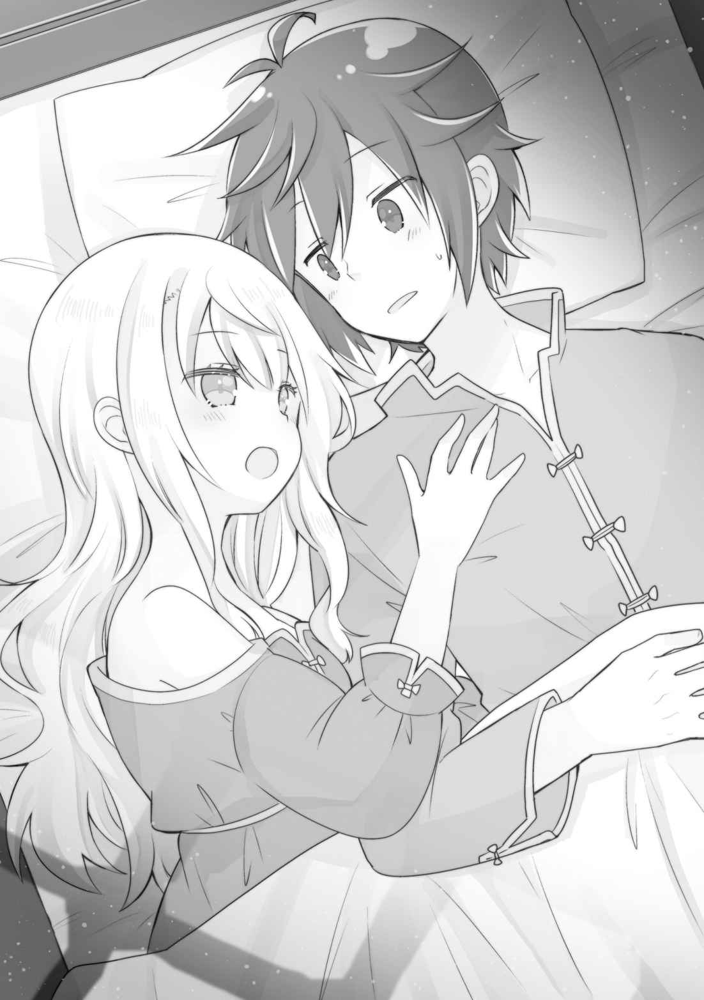
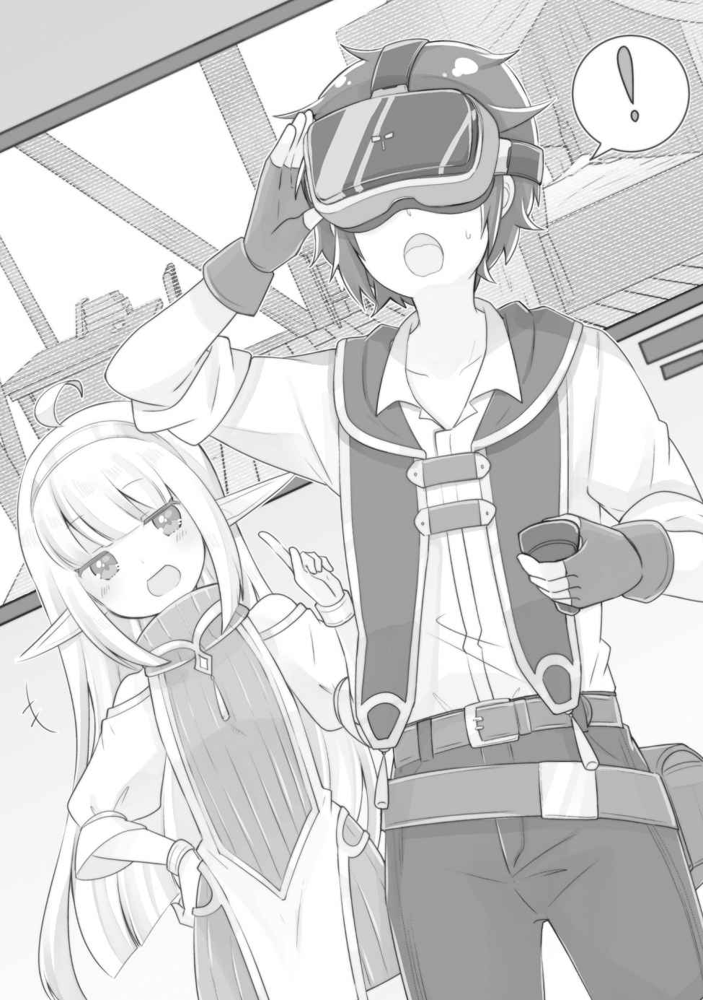
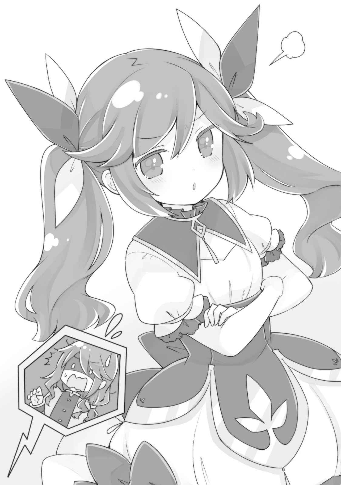
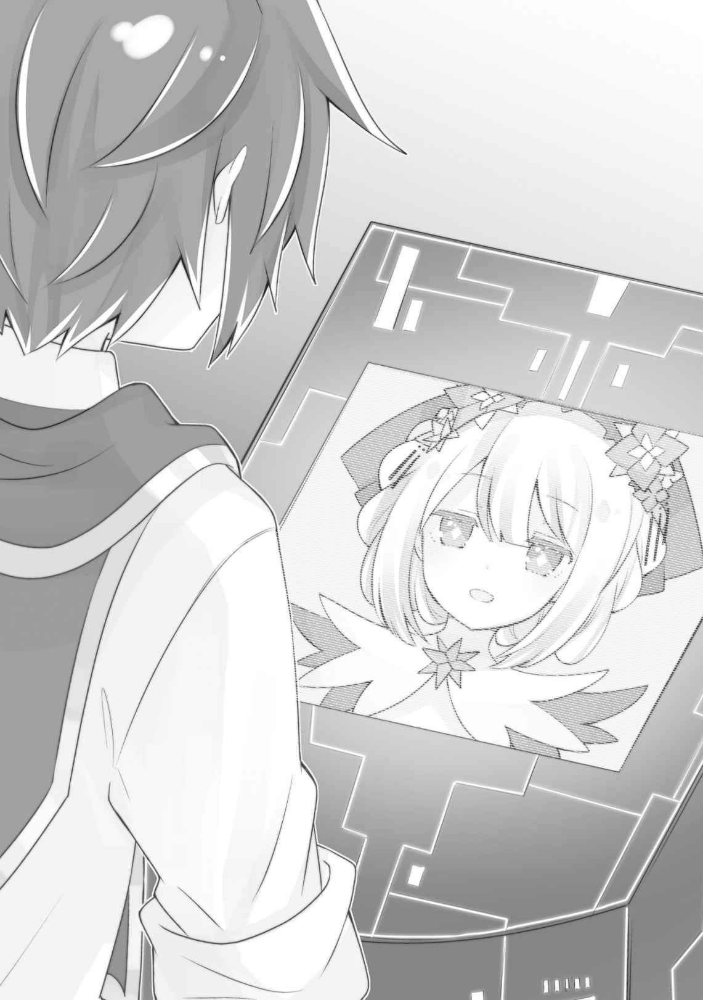
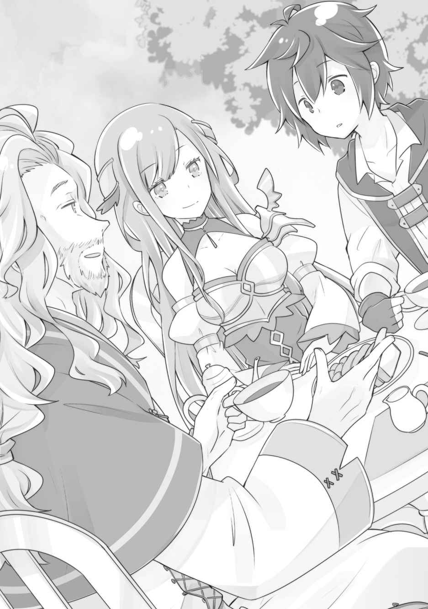

第一章
「大事な話があるから聞いて欲しい」
親父は居住まいを正し、里帰りした俺たちにそう切り出した。
本人からすれば、話すのに勇気が必要な内容だったと思う。
俺は異世界転生者で、この世界での自我が芽生えた時から前世とほとんど変わらない「大人としての感覚」を持っていたから、当然自分が捨て子であると理解していた。そして、この優しい男が、自分とルキアを「実の子」として育ててくれているということも。
異世界に転生した俺の人生が、即時終了とならなかったのは一〇〇％彼のおかげで、その恩はどれだけ返しても返しきれないほど大きい。
親父は俺たちを拾う前に奥さん……つまり俺たちにとっての母親に先立たれている。
親父は神官でそれなりに高給取りだ。再婚しようと思えばできたはず。
小さいころ、俺も何度かそれとなく再婚したらどうか訊ねたことがあった。だが、親父は少し寂しそうな顔をして首を振り、まだ幼かった俺たちに、どれだけ母さんのことを愛していたかということ、再婚するつもりはないということを優しく諭したものだった。
親父は、その時にも俺たちが実の子ではないとは教えなかった。だから、彼の奥さんは俺とルキアの母親であり、それが俺たち三人家族の不文律であったのだ。
そして、今日。
神妙な面持ちの親父が俺たちにする「大事な話」が、そこに触れるのは間違いなく、俺としてはついにその時が来たのかという心持ちだった。
もしかすると、親父は永遠にそのことを秘密にする可能性もあると考えていただけに、わずかな驚きすらあった。
──しかし、親父の口から告げられた言葉は、俺の予想を遥かに超えた「秘密」だった。
「ルキア、君はモンディアル王家の血を引いているんだよ」
その言葉を聞いた瞬間の俺とルキアの顔は、なかなか面白いことになっていたと思う。
語りはじめは、想像通り俺たちの出自のこと──拾われ子であるという話だった。
私たちは本当の親子ではないから、これからは自分たちの自由に生きてくれればいいというようなことを親父は言い、俺たちは出自なんて関係なく本当の親子だと思っているから、これから親孝行させて欲しいなんて話をした。
これは、国へ戻るまでの道すがら、ルキアと話していたことでもあった。
俺たちが戻ったら、親父は高い確率で出自の話をするだろうから、そうしたら、一生支えるつもりだとハッキリ言おうと決めていたのだった。
そこまでは、ある意味予定調和であったのだが、まさか、モンディアル公国という単語が飛び出してくるとは予想もしていなかった。
「あの時、私は妻の死を彼女の両親に報告する為に、モンディアルを訪れていたんだ。その時に結婚式にも来てくれた妻の親友に会ったんだが──その彼女に小さな女の子を自分の代わりに育てて欲しいと涙ながらに頼み込まれてね。私は断れなかったよ」
なんでも、奥さんの親友さんはモンディアル城勤めの侍女であったが、王様とそういう関係になってしまい、その結果として妊娠。しかし相手は王族。子は堕ろすしかない。
だが、親友さんは秘密裏に一人で産み、育てていた。だが侍女たちの間で、親友さんが王との子を育てているという噂が立ちはじめ、このままでは、娘は取り上げられ殺されると危惧した親友さんは、たまたま訪れていた神官に娘を託した──
ということらしい。
あの時、俺とルキアは二人で道ばたに捨てられていたが（ただ、ルキアはカゴに入れられて、暖かいシーツにくるまれていたが、俺は肌着のままだった）、ルキアは元々拾われる予定の子どもだったということだ。
まあ、確かにいくら捨て子とはいえ、地位が高く暮らしも裕福な神官に拾われるなどという偶然が、そうあるわけがないのだ。当時は、この世界のこともよくわかっていなかったから、単に運が良かったと思っていたものだが。
ちなみに、俺のルーツについては結局、謎のまま──というか、普通に俺は便乗捨て子だったっぽい。まあ、生まれがどうかなどはどうでもいいことだ。
親父は、この話をして俺たちがショックを受けると思っていたらしい。俺たちを実の子どもとして育ててきたのだから、当然だろう。
だが、俺たちは、そのことをとっくに知っていたから、ショックは受けなかった。
俺たちの家族の関係がそのことを知って変わるということはない。
「あー……、父さん。モンディアル公国ってあの海の向こうの小国……ですよね？」
ルキアがたまらず確認する。
「君は修道院で習ったかもしれないね。少し前にライムリーグ帝国に攻め込まれて滅びたらしいが──」
「じゃあ、ルキアはそこの王様の子ども……ということか」
まさか、こんな話が飛び出すとは夢にも思わなかったから、どうリアクションしていいかわからない。妹が実は王族なんですよと言われても、困惑する以外ない。
というか、全く知らない国だったら「なるほどなー」で終わったかもしれない話なのだが、この話ってつまり、ルキアとユーリが実の姉妹だってことなのだ。
「父さん、私が産まれたときに難しい立場だったのって、ひょっとしてその国では、まだ第一子が産まれていなかったからですか？」
「む、ご明察だよ。モンディアル公国では、なかなか世継ぎが産まれなくてね。だから、ルキア、君の存在が知られるとマズい状況だったんだ。まあ、私が訪れた時にはもう第一子が産まれていたけれど、それでも君のほうが先に産まれたのは確かなのだからね」
「なるほど……。では、私が姉ですね……」
ニヤリと笑い、呟くルキア。
この気持ちの切り替えの早さよ。
もうユーリと自分のどっちが姉なのかを聞き出している。ユーリに妹扱いされるのが、本当に気に入らなかったのかもしれない。
その夜。
「ねえ、お兄ちゃん。私とユーリさんが姉妹だったって知って、どう思った？」
隣のベッドからルキアはそう訊ねてきた。
俺たちの部屋は、親父がそのまま残してくれてあったので、俺たちは久々に実家に泊まることにしたのだ。
アビスは無事に到着した報告をするために、さっき島に戻った時に置いてきた。
「そりゃ、驚いたよ。こんな偶然あるんだなって……。産みの親がどこかにいるんだろうとは、少しは考えたことあったけどさ」
驚きすぎて、逆に現実感がないというか、すでに「へー、そうだったんだぁ」みたいな域に到達しつつある。まあ、俺の場合は転生者だから、親というものの概念が普通の人と違う……というか変質しているというのもあるのだろうけれど。
「お兄ちゃん、父さんがそれ言った時、口開けて固まっちゃってたもんね。それにしても、このこと知ったら、ユーリさんどんな反応するんだろ？」
「どうだろうなぁ。サラさんとか近衛隊のみんなは、間違いなく驚くと思うが」
ユーリの反応は想像しにくい。まさか、「隠し子とは！」と怒り出すなんてことはないだろうが、王族の倫理ってのはいまいちまだ掴めてないところがある。
「ユーリさんってやっぱちょっと浮世離れしたとこあるもんねぇ」
生まれた時からの環境の違いは、如何ともしがたい。俺とルキアは、神官の家にもらわれたから、かなり良い暮らしをさせてもらったが、それでも庶民の枠である。
貴族や、まして王族とは隔絶しているだろう。
「……お兄ちゃん、このこと……ユーリさんに言う？」
体をこちらに向けて、真剣な目を向けるルキア。
なるほど、確かに「言わない」という選択肢もあるのか。
「ルキアはどうしたい？ 俺は正直、どっちでもいいかなって思うけど。モンディアルも滅びてるから家督がどうのって話もないだろうし」
これが、モンディアル公国が健在だとすると、ちょっとややこしい可能性はあるが、その心配がない以上、本当にユーリとルキアだけの問題だ。
「じゃあ、言います。私が姉みたいですし、彼女の間違いを訂正しなければ……」
やっぱり妹扱いされるのが嫌だったのか。
「ユーリはルキアのほうが年下だと思ってたみたいだから、ショック受けるかも」
「そんなことでショック受けるようなタマじゃあありませんよ、あの人は」
ルキアはユーリに貴族マナーをみっちり受けさせられたようだが、スパルタだったのだろうか。ルキアは頭がいいから、マナーくらいすぐ覚えそうだけど。
まあ、ユーリはルキアの奔放さに頭を抱えてたみたいだし、厳しく接しているのかもしれない。ルキアにとっては、目の上のたんこぶ的存在だ。
「……それに、ユーリさんと兄さんが結婚する今となっては、事実上姉妹みたいなものでしたし。元王族といってみたところで、今すでにあの島では王族ですし、実質あんまり大きな変化はないんですよね」
「義理の姉妹か、実の姉妹かは、けっこう違うだろ」
ルキアは自分のルーツを知っても、想像以上にサバサバしたものだ。
我が妹ながら、こいつもかなりの変わり者だと思う。
「とにかく、これで私とお兄ちゃんに血の繋がりがないことが決定的になっちゃった。私の見たお兄ちゃんの記憶だと、もしかしたら本当の兄妹の可能性もあったけど」
ルキアは俺の記憶を見たことを隠すこともせず、そんなことを言った。
確かに、あの時、俺とルキアは同じ場所に捨てられていたから、赤の他人という可能性は低いと考えていた時期もあった。
あまりに似ていないから、その可能性は低いと最近では思っていたけれど。
「だからって、ルキアのことを妹だと思わないなんてことはないよ」
ルキアのほうを向いて精一杯真面目な顔で言ったが、俺の最愛の妹はキョトン顔だ。
俺と血の繋がりがないと知って、悲しんでいる……わけではないのか……？
「ほんと……お兄ちゃんって鈍いよね」
ため息交じりに、そんな台詞を吐くルキア。
そして、身を起こしてベッドに腰掛ける。
「ねえ、お兄ちゃん。最近はずっとユーリさんに邪魔されてたから、今日はいっしょに寝てもいい？」
いっしょに暮らしていたころは、しょっちゅう同じベッドで寝ていたから、その頃のことを思い出したのだろうか。もう一人じゃ寝られないって歳でもないだろうに。
「いいけど……狭いだろ、このベッドだと」
「ふふ、狭いほうがいいかも」
薄笑いを浮かべながら、ベッドに入ってくるルキア。
子ども部屋に二つ置かれているベッドだ。サイズは大人にはちょっと小さめ。
二人となれば、ほとんど密着してないと、落ちそうになる。
肌が触れると、さすがに少しドキッとしてしまうが、それは仕方がないことだろう。
「この部屋でこんな風にいっしょに寝るのは、今日が最後だろうな」
「じゃあ、今日が妹最後の日……ってことで。私、妹を卒業します！」
ニシシと至近距離で笑い、甘えるように抱きついてくる。
「そんなに密着してくるなって。暑いだろ」
「だーかーら、兄さんは鈍いって言ってるんですよ。私はもう妹だけど妹じゃないんですよ？ さっき、言いましたよね？ 血の繋がりがないのが決定的になったって……」
ルキアが頬を染めて、こちらを見上げてくる。
なにを言っているんだ、こいつは。
「……私も、女だってことですよ。兄さん、私の妹を受け入れておいて、私はダメなんて……そんなこと言いませんよね？」
「え？ ……はぁ？ ルー、何言って……」
ルキアの言葉に理解が追いついてこない。
「その反応……。本当に気付いてなかったんですね……。やっぱり鈍いですよ、兄さん」
「気付くもなにも……、甘えん坊な妹だとは思ってたけど」

「ハァー……。兄さん……この歳になって、こんなにベタベタする妹はいませんって」
俺の胸に顔を埋めながら、そんなことを言う。
俺は前世で妹がいなかったから、兄妹についての知識がないのだ。そりゃあまあ、ルキアはちょっとブラコンだとは思っていたけれど。
「まあ、いい機会だからハッキリ言ってしまいますけど──」
言いながらルキアは俺に馬乗りになった。マウントポジションというやつだ。
窓から差し込む月明かりが金色の髪と横顔を白く照らし、その瞳があまりに真剣で、俺は思わず息を呑んだ。
「私……兄さんのことが好きです」
それは、何度も聞いた言葉だった。
「お、おお。俺もルーのこと、好きだよ」
だから、俺もいつもと同じ言葉を返した。
ルキアのことは好きだ。
ただし、家族として。
だって、赤ちゃんの時からいっしょで、半分は俺が育てたようなものなのだ。
だから、家族としての「好き」だ。
血の繋がりがないことが確定したからといって、女性として見れるというものではない。
俺の返事で、ルキアにはその意図が伝わったらしい。
「はぁ～……、さすがにちょっとヘコむなぁ……」
そう言って、ため息混じりに俺の胸に顔を埋めてきた。
「でも……ルーの気持ちはわかった。嬉しいような、気持ち悪いような変な感覚だな」
「ひっ、ひどい！ 気持ち悪いだなんて！」
「言葉のアヤだよ。だって、本当に甘えん坊な妹だって思ってたからさ」
「……だから、鈍すぎなんですよ……。私は兄さんが初恋なのに」
「えっ、そうなの？」
さすがにそれは衝撃の事実すぎないか？
「そうですよ。やっぱり血の繋がりがないっての本能でわかっちゃうんですかね。七歳か八歳くらいのころには、もう異性として好きでしたから」
「嘘だろ……全く気付かなかった……」
七歳八歳って、俺たちがこっそり祝福を授かった歳より、だいぶ前だ。ルキアが、能力で捨て子だったと知るより前には、もう俺のことが好きだったってことなのか。
女の子のほうがマセてるとは、よく言ったものだ……。
「まあ、そういうわけですから、これは他の女の子たちに対しての宣戦布告でもあります。元妹ってのは、考えてみればちょうどいいハンデですからね。そうでなかったら、私がブッチギリの勝利者間違いなしですし」
「宣戦布告って……」
「もちろん、帰ったらみんなにも正式に告知しますから、覚悟しておいてくださいね。私、本気ですから。兄さんを手に入れる為なら、なんだってしますよ」
怖い！ この妹の本気が怖い！
……まぁ、実際のところ、俺の気持ちだけなのだ、問題となるのは。
血が繋がってないんだから、タブーってこともないし、俺が拒否したらルキアはなにをやらかすかわからない恐ろしさもある。
「ま、今日のところは抜け駆けはこれくらいにしておきますよ。帰ってからが本番ですからね」
サッと立ち上がって、自分のベッドに戻るルキア。
「それじゃ、おやすみなさーい」
そのまま、ルキアはさっさと眠ってしまった。
俺は、わけのわからない感情を抱えたまま、いまいち眠れない夜を過ごしたのだった。
次の日の朝。
やや寝不足だったが、夜明け頃に目を覚ました俺は、起き抜けで開拓村へ移動した。
「やー、カイ！ 感動の対面だったね」
炙ったイカを囓りながら、すぐにエネルが顔を出した。
俺たちが親父と再会したのを、テレビで見ていたのだろう。
「見てたのか？」
「まあ、そりゃあね。妹ちゃんの件は私も驚いたよ。私も似ているなーとは思ってたけど……。それはそうと、あとで私にも紹介してくれるんでしょう？ お父さん」
「もちろん。朝ご飯を食べたら、すぐ島に移動するから、その時にでも」
「カイのお父さんなら、私たちにとってはおじいちゃんってことになるのかな？ なんだか、緊張するね」
「イカを囓りながら挨拶しなけりゃ問題ないでしょ」
コロモとシエルは、なにか食べながら出てくることはないだろうが、エネルはやらかしそうで心配だ。
まあ、だからって親父が怒ったりするわけでもないだろうけど。
「それはそれとして、ちょっと食材を出して欲しい。朝ご飯を作るから」
「りょーかーい」
エネルに品目を伝え、受け取ってから村を出る。
今日は、久しぶりに俺たちで作ろうと、昨夜のうちにルキアと話していたのだ。
「ふぁ～あ、お兄ちゃんおはよ」
戻るとちょうどルキアが起きたところだった。
昨日の夜のことが嘘だったかのように、今日は普通だ。もしかすると、アレは夢かなにかだったのかもしれない。
俺がそんな風に考えているうちに、ルキアはベッドから這い出てきて「おりゃ～」と唐突に抱きついてきた。
「おはようのキスはぁ～？」
「そんなの一度もしたことないだろ！」
「じゃあ、今日からやることにしよう！」
やはり昨日のことは現実だったようで、今まで以上にベタベタしてくるルキア。
よくよく考えてみると、元々こうだったような気もしなくもないが、昨日の件のことがあるからか「甘えん坊な妹」から、なにか別の捕食者的なものに見えてくるから不思議だ。
可愛い妹には違いないのだが、正直……ちょっと……困る。
「親父がルキアに真実を教えたのは間違いだったんじゃないかって気がしてきたよ、俺は」
「えー、別にあの件がなくても私はずっとアプローチしてましたけど？」
「いずれにせよ、節度は守ろうな……。親父が見たら卒倒するぞ」
「はーい」
パッと離れるルキアだが、あんまりわかってなさそうだ。自重する気はないと、背中が語っている。これはまたユーリにお説教してもらうしかないかもしれない。
「まあ、とにかく朝ご飯を作ろう。親父も、娘の手料理を食べたら喜ぶと思うぞ」
「はーい。私、顔洗ってくるから、お兄ちゃん、準備しておいて～」
台所へ向かい、料理の準備を開始する。
あまり使われた形跡がないキッチンは、俺たちがいなくなってからの年月を感じさせた。
「そういえば料理するのは久しぶりだな」
島ではサラたちが作ってくれているし、外に出ている時は外食か、開拓村でエネルに出してもらったものを食べることが多い。
「ま、エネルから食材貰ってきてるから、簡単な調理と、あとは並べるだけだったりするわけだが……」
卵は目玉焼きにして、ローストビーフは完成品をエネルから貰ってきてるから、切るだけ。あとはサラダと、スープ。パンもカットして並べるだけ。
「あれっ？ お兄ちゃん、ほとんどできちゃってるよ？」
顔を洗ったルキアが、台所にやってくる。
「いや、まだだ。目玉焼きを載せるまで完成じゃない」
「まー、それじゃちゃちゃっとやっちゃいますか。お兄ちゃんは、お父さん起こしてきて」
「了解」
言われるまま、親父の部屋をノックする。
親父はもう起きていて、朝のお祈りをしている最中だった。俺は「朝ご飯できてるよ」と声をかけて扉を閉めた。
親父は毎日三回のお祈りを欠かさない。
彼は主神ファーレーと、自らに恩寵を与える光の神ルークスに祈っているのだが、ご存じの通り、ファーレーことアーサーは島にいるし、ルークスはアーサーの創作である。
「……ルキア、親父にはアーサーさんのことは絶対に秘密だぞ」
目玉焼きを両面焼きで作る妹に耳打ちする。
「そういえば、昨日もそこは誤魔化してたもんね」
「あの人がずっと信じてきた神のこと、さすがに真実を言うのは酷だし……なにより、嘘というわけでもないしな。むしろ、アーサーさんは本当に神みたいなものだし……。ただ、島でのんびり暮らしてるってだけで」
アーサーと彼の能力である『彩の神々』のことはトップシークレットだ。島でも一部の人間にしか知らせていない。
一〇年後か二〇年後か、いずれはアーサーの寿命が尽きる前に、彼の能力のことを神殿に発表させ、「祝福」がなくなる世界が来るということを、世界に知らしめる必要があるのかもしれないが、今はまだその時じゃない。
「お父さんには、のんびり平和に過ごして欲しいもんね……」
「そういうことだ。神殿のほうの手もこっちには回ってないみたいだしな。うまくやろう」
親父はまだ若く、確か四〇歳になるくらいだったはず。
この世界の平均寿命がどんなものなのかは知らないけれど、前世の日本のような長さではないことだけは確かだ。
まだ、老後というような歳ではないが、それでも息子として親には穏やかな老後を過ごして欲しいという希望はある。なんでも真実を知らせれば良いというものではない。
食事の後、いよいよ親父を「島」に招待することにした。
昨日、アビスを島に戻した時に、島のみんなには親父を連れていくと伝えてある。
ユーリが「パーティですね！」と張り切っていたから、準備はしてくれてあるだろう。
「昨日、俺の能力のことはさらっと説明したけど、能力経由で島まで簡単に移動できるから。父さんにみんなのこと紹介するから、支度しちゃって」
「創造の神……といったか、今日の朝の食材もカイが出したものなのだろう？ そんな力、聞いたこともない……」
「父さんは、やっぱりほとんどの神の名を知っているの？」
「そうだね。光栄なことに、一度だけ祝福の儀式の担当官もやったことがあるから。……もっとも、ルキアに祝福を与えている神様の名前は知らなかったけれど」
親父によると、あれは担当地域の高位神官による持ち回りなのだとか。俺が子どものころに見た、神の名が記された本は、その時に借り受けていたものなのだろう。ある程度大きくなってから、書斎を漁っても見つけられなかったから。
「まあ、俺に恩寵を与えている神様も、ルキアの神様同様、秘密の神様ってやつだから。島には、もう一人俺と同じ神様の祝福を授かった子がいるよ」
神妙な顔をする親父。
俺がこの祝福のせいで島に捨てられたということは、昨夜のうちに話してある。もう一人いるということは、神殿が定期的に島に子どもを捨てていた証拠みたいなものだ。
実際、俺とカエデは助かったが、それ以前のアラミラの祝福者は全員殺されたのだから、その一点をとってみても、神殿は決して許されるものではない。
だが、親父のことを思うと俺は神殿を糾弾する気になれないのだった。悪いのは上層部であって、大部分は善良な人たちで構成されている組織には違いないのだから。
ちなみに、厳密には島にはあと二人アラミラの使徒であるアーサーとステイシーがいるが、あの二人のことは言わなくてもいいだろう。
「まあ、とにかく、俺の『てのひら開拓村』は見たほうが早いから。百聞は一見にしかずというやつだよ」
俺の能力を口で説明するのは難しい。
……いや、難しいというより、理解を得られないというほうが適切だろうか。
なにせ、どこかにある開拓村に移動できる能力で、開拓村は文字通り開拓できるから、それを育てることで食料も資材も取り出せるなどと言われても、チンプンカンプンだろう。
「じゃあ、行こうか」
戻ってこられるように、実家の自室に「出口の杭」を一本突き刺してある。
親父は、あまりよくわかっていないのか普段着のままだが、まあ別にそこは問題ないだろう。親父とルキアと手を繋ぎ、能力名を口にした。
「──ここは、どこだ……？ カイ、いきなり知らない場所に来たようだが」
「父さん、さっき説明しただろ。ここが俺の能力で育てた村なんだってば。どこにあるかは……ちょっとわからないけど」
開拓場所の所在地は謎だ。強いて言うなら俺の脳内……という気がするけど、俺自身も村に入っちゃってるから、余計に意味がわからない。
どこかにある謎な空間。あるいは、俺だけに用意された惑星。
仮説を立てればいくらでも考えられるが、答えは出そうにない。
「能力……？ これが……？」
事前に説明してあったにもかかわらず、あっけにとられて周囲を見回している親父。
神官だからこそ、こんな力はちょっと普通じゃないと、肌感覚でわかってしまうに違いない。そういえば、眠りの神官であるマリエラを開拓村に入れてやった時も、死ぬほど驚いていた。逆に、一般人はさほど驚かない。彼らにとっては、癒しの奇跡も、開拓村も同じように「あり得ないこと」だからなのかもしれない。
「わー！ はじめまして！ カイのお父さん！ 私、エネル！」
「次女のコロモです。よろしくお願いします」
「……末の妹のシエル。以後、お見知りおきを……」
エルフ三姉妹が屋敷から出てきて、親父に挨拶する。
「これはご丁寧に。私は、オットー・ハスクバーナ。カイとルキアの父親です」
柔和な微笑みを浮かべて、エネルたちと握手を交わす親父。エネルたちの存在に動じないあたり、やはり人間ができている。耳が長い人間なんて見たことないだろうに。
とはいえ、エネルたちのことも事前に説明はしてあったので、挨拶は問題なく済んだ。
「これ、お近付きの印に！ カイのお父さんってことは、私たちのおじいちゃんってことだからね。カイを育ててくれて、ありがとう！」
「私からは、これを。気に入ってもらえると嬉しいです」
「……ボクも用意したんだよ」
「君たちはカイの子どもなのか？」
「厳密には違うけど……、似たようなものかな。カイの能力で生まれたのが私たちだから」
「では、私にとっては孫ということだね。開けても？」
エネルたちは、それぞれサプライズプレゼントを用意していたらしい。
俺はエネルたちにとって生みの親のようなもの。その俺を育てた親父は、おじいちゃんってことになるんだな。
てか、親父もいきなりこんなデカい孫が三人もできて困惑以外ないだろう……。
親父が、エネル、コロモ、シエルから受け取ったプレゼントを開封する。
中身は──
ハムの詰め合わせ……。これはエネルだな。エネル以外ないチョイスだな。
三つ揃えのスーツ……。コロモ、ついに採寸なしでこんなもの作るようになったか。
置き時計……。なにこれ、俺も欲しいんですけど。
「これは……こんな素晴らしいものを……。ありがとう、大切にさせてもらうよ」
しかしプレゼントとは。エネルたちめ、味な真似を。親父、涙目になってんじゃん。
個人的には、プレゼントでハムを贈る感性はどうかと思うが。
しかも、わざわざ前世でたまに見た「贈答用のハム詰め合わせ」を完全再現する周到さで、俺向けのウケ狙いなのかと勘ぐるほどの出来だ。
とはいえ、宝石のようにピカピカと輝くハムをもらって親父も嬉しそうである。
スーツと置き時計はいわずもがな。ちょっと見せてもらったが、スーツはオリーブ染めの渋い逸品で、枯れた味わいがあって親父に似合いそうだ。
置き時計は「機械式」。シエルの精霊たちが作ったのだろうが、こんな精密なものを作れるのは驚きだ。シエルによると、もう少し村のレベルが上がれば、巨大な時計塔も作れるようになるとのこと。そしたら、島の灯台に時計を組み込んでもいいな。
「カイさんのお父さん！ スーツ、よかったら着てください！」
コロモが瞳を輝かせて親父を着替えさせようとする。
いつのまにか、シャツとネクタイ、ソックスに革靴まで用意しているではないか。
親父は普段着のままだったから、ちょうどよかったかもしれない。ユーリとかサラあたりは、かなりガチめに着飾っていると予想できるから……。
「せっかくだから、着替えてきなよ。私も何着か作ってもらったけど、コロモさん、すっごく腕がいいんだよ。ほらほら」
ルキアが、着替えのために親父を屋敷へ引っ張っていく。
確かにコロモの腕は一級品だ。なにより、素材さえあれば、俺の前世の服を俺の曖昧な知識を元に再現できるのだから、恐れ入る。
しばらくして、スーツに身を包んだ親父が登場した。
「ど……どうだろうか。こういう服は着たことがないから……。カイ、似合うか？」
「おおー、似合う！ 似合うよ！ 神官服の姿ばかり見てたから、新鮮」
親父は長く聖職者として節制した生活をしてきたからか、無駄な贅肉もないし、姿勢も良くて、スーツはよく似合った。
「お父さん、格好いいよ！」
「よっ！ ロマンスグレー！ イケオジ！」
ルキアとエネルが褒めそやす。エネルのは砕けすぎな気もするが、親父もちょっと頬を赤らめてまんざらでもなさそうだ。
男の俺から見ても、なかなか渋い。やはり男はスーツだな。
「じゃあ、服もパリッとしたとこで、いこうか」
「しかし、本当にここから行けるのか……？ カイたちが暮らしているという島まで」
親父は未だに半信半疑だが、これも体験してもらうほうが早い。
俺は親父の手を引いて開拓村の中を歩き出した。
開拓村は、もはや「村」というには無理があるほど発展してきていて、エネルが言うには、もしかするとそのうち「街」になる可能性もあるのだという。
能力名は「てのひら開拓村」だが、街になるのだ……。いや、深く考えてはいけない。
「この村は、その島とは違うんだろう？」
通りを歩きながら親父から質問がくる。やはり、村には見えないようだ。
「そうだね。ここはあくまでも俺の能力の世界の街だよ。能力の中には入っていられる時間にも限りがあるし、散策くらいはできるけど、住むのは無理なんだ」
「なるほど……。それにしても、こんな街が、能力だなんて……」
キョロキョロと物珍しげに歩く親父。まあ、確かに現実としか思えないよな。
「俺もここまで発展するとは、最初は思ってなかったよ。最初は、何もないただの草原だったんだから」
ただまあ、それでもまだ終点じゃあない。開拓村はまだまだ発展の余地があるはずだ。まだまだ入れていない素材も多いし。
「そこの出口から出れば、島に行けるから」
開拓村の北の出口に到着して、そう教えると、親父は変な顔をした。
「ずっと街道が続いているようだが……」
「あの先には行けないんだ。能力の限界ってやつだね」
開拓村の外にも世界はある。山がある、海がある。荷車を牽いた行商人もやってくるし、旅人も入植者も外から来る。もちろん、外に出て行く村人もいる。
だが、その「外の世界」がどうなっているのかは、俺には知る術がない。まさしく、能力の限界なのだ。「てのひら開拓村」のてのひらは、この村の中だけなのだ。
「ま、とにかく行こう。みんなそろそろ待ちくたびれてるかもしれないから」
俺は親父とルキアの手を引き、北の出口に向かった。
「おかえりなさーい！」
北の出口から出てすぐ、結界の大樹の周りには島民みんなが集まっていて、一斉に拍手で出迎えてくれた。白い横断幕まで用意されていて、大きく「歓迎！ オットー・ハスクバーナ様」の文字。どこ発の文化なんだそれは。
親父は、突然のことに圧倒され固まっている。
……まあ、俺でも少し驚いたから気持ちはわかる。開拓村を介した瞬間移動だけでも驚くのに、島民ほとんど全員だから百人近い人数が集まっているのだ。
「カイ様！ おかえりなさいませ！ そちらの方がお父様なのですね」
代表してユーリが前に出る。予想通りドレスで着飾り、かなり気合いが入っている。
「はじめまして。カイ様の婚約者のユーリセシルと申します。カイ様のお父様ならば、私のお父様になる方ということ。実の娘のように接していただけたら幸いです」
深々と頭を下げて、いきなりブッ込んでくるユーリ。
昨日、アビスとそういう関係であるみたいな話をしたばかりなのに、これじゃ丸っきり俺が浮気野郎みたいじゃないか。
いやまあ、複数の嫁さんを娶ろうとしている時点で、誤解でもなんでもないのかもだが。少なくとも、死別した奥さんを愛し続けている親父からすれば、かなり気が多い息子……まあ、それはいいか。
「ご丁寧にありがとうございます。カイの父親の、オットー・ハスクバーナです。あなたもカイと婚約を……？」
「はい。正式な式はまだですが、一年以内にはと思っております」
「なんと！ あなたのような美しいお嬢さんが相手で、カイも喜んでいるでしょう」
いやまあ、嬉しいは嬉しいけど、親父とそういう話をするというシチュエーションに慣れてないから、なんだか恥ずかしくなってしまうな。
親父もチラリと少し遠くでボンヤリとこっちを見ているアビスを見て、その後俺のほうを見て、なにか特別な事情でもあるのかとでも言いたげな表情をした。
ごめんなさいお父さん、別に特別な事情は特にないんだ……。
「ちょちょちょ、ユーリセシルさん、お父さんにいきなり嫁ムーブしないでくださいよ！」
「嫁なんですから、失礼のないようにご挨拶をするのは当然です」
ルキアが前に出て、ユーリとルキアが並んで口論を始める。
最初のころと比べれば減ったが、なにかの拍子に二人は突っ掛かり合うような間柄だ。ユーリは「本能的に相容れない何かを感じているのかも」なんて、前に言っていたが、ルキアの出自の話を聞いた後だからか、もう仲の良い姉妹にしか見えない。
「ユーリ……ユーリセシル……？ なあ、カイ。彼女は、ユーリセシルと名乗ったよな？」
親父も何かに気付いたらしい。
というより、ルキアも親父に気付かせる為にわざとやっている節がある。時々こっちを見てニヤニヤしているし。
「彼女は確かにユーリセシルと名乗ったよ。父さん」
「……いや、だが……まさか……。しかし、似ている……」
親父が呆気にとられたような顔をしているのをユーリが訝しむ。
「どうかいたしました？ 申し訳ありません、ルキアさんは姉になる私のことが大好きすぎて、こうして時々突っ掛かってくるのですわ」
「姉……？」
ユーリは、俺と結婚したら妹であるルキアが自分の妹になるという意味で言ったのだろうが、それが決定的だったらしい。
親父が俺とルキアの顔を見る。俺は悪戯がバレた子どものように、苦笑いした。
「ふっふふ！ お父さんは気付いたようね。ユーリセシルさん、余裕こいていられるのも今のうちですよ！」
なぜか勝ち誇るルキア。こいつの価値観はイマイチ読めないな。
「申し訳ありません、ユーリセシルさん。その……フルネームをお聞きしても？」
「ああ、これは失礼致しました。ユーリセシル・ディ・モンディアルです」
「モンディアル……。ではやはり、あなたはモンディアル公国の……？」
「あら？ 以前にお会いしたことが？ 申し訳ありません、私としたことが」
「いえいえ、直接お会いしたことはありません。あなたのご両親とは、一度だけ謁見の機会がありましたが──」
おお、親父はモンディアルの王様と会ったことがあったのか。まあ、神官ならそういう機会もあるのかもしれない。それに、モンディアルは小国だったらしいから、王族と国民が近いという可能性もあるのかも。
親父が何か言いたげに、俺とルキアのほうを見る。
昨日、ルキアの出生の秘密を聞いた時にも、ユーリの話はしていないからな……。いつも冷静沈着な親父が、さすがに戸惑いを隠せていない。まさか昨日話したその王族とすでに知り合っていて、俺が結婚の約束までしてるなどとは夢にも思わなかっただろう。
「ユーリさーん。なんでうちのお父さんがちょっと戸惑っているかわかるぅ～？」
ルキアが、親父の横から顔を出し、意地悪っぽく微笑む。
「えっ？ それは、滅んだはずの国の人間がいたから……では？」
「んまー、それもあるにはあると思いますけどぉ」
「ちょっ、ちょっと待てルキア。本当に彼女は、モンディアルのユーリセシル姫で間違いないんだな!? ということは、お前……」
「そうですよ？ いやー、あの話を聞いた時は、世界は狭い！ って思いましたね」
「あの話？ なんのことかしら？」
「にっひっひっひ。どーしよっかなー。教えちゃおっかなー」
ユーリを前にして、妙に嬉しそうなルキア。
こいつ、ユーリと実の姉妹だったのが嬉しくてたまらないんだな。兄だからわかる。
ルキアがいつまでも勿体ぶって全然話が進まないので、俺が掻い摘まんで説明した。
さすがにこの話にはユーリも驚いたようで、呆気にとられた顔をした。
元モンディアルの面々に至っては「エ────!?」と悲鳴に近い驚きの声を出した後、大爆笑である。彼女たちにしてみれば、国が滅びてもユーリは「自分たちのお姫様」である。そのお姫様にやけに馴れ馴れしく絡むルキアに複雑な気持ちを抱いていたのだ。
だが、それがまさか本当の姉妹だということになれば、もう笑うしかない。
「父の隠し子の噂は、口さがない侍女から聞いたことがありましたわ。でも、まさかルキアさんがそうだなんて……」
改めて二人を見比べてみると、瓜二つではないけれど、間違いなく似ている。
「昨日、カイたちにルキアの出自についての話をしたばかりだったのです。カイもルキアも妙な驚き方をするな……とは思っていたのですが、まさかすでに関係があったとは」
「いや、俺もルキアも叫び出しそうなくらい驚いてたよ。『嘘だろ！』って叫びかけたもの。まあ、さすがにそういう雰囲気じゃなかったけど」
「兄さん、真面目な雰囲気苦手だもんね」
なにその兄評。でも言われてみれば、そうかもしれない。前世でシリアスに死んだのが影響しているのかも。俺は、できれば毎日笑っていたいのだ。
「まあー、ルーツを知れたのは良かったけど、今更あんまり関係ないですしね……。ただ──やはり私のほうが年上でしたね！ ほら、お姉ちゃんと呼んでもいいんですよ？」
ルキアは挑発するが、ユーリは案外まんざらでもない表情で「お、お姉様……」と応えた。これは後で聞いた話だが、ユーリは一人っ子だったので兄弟に憧れていたようだ。
わいわいと騒ぎながら食堂へと向かう。
食堂はかなり広めに作ってあるので、百人くらいなら入る。まあ、さすがに立ち食いになるが、すでに食べ物も用意され、パーティの準備万端だ。サラもかなり張り切ったようで、料理も美味しそうだ。
俺は追加で飲み物やらなんやらを開拓村から出し、ちょっと早めの宴が始まった。
親父は状況について行けないのか、最初は戸惑いの表情を浮かべていたが、次第にみんなと談笑する余裕が出てきたようで、珍しくお酒も飲んで少し酔った様子だった。
その日は夜まで宴が続き、親父は城に泊めた。次の日には仕事があるかもしれないが、まあ今日くらいはいいだろう。
結局次の日は、親父も休みだったので島を案内した。
自分がやってきたことを見てもらいたかったというのもあったかもしれない。
最後は、灯台に登って、島全体を見てもらった。
大きな施設は、灯台と水道橋と港と城くらいだが、石畳の道は着々と延びているし、今ではとりあえず島の北側までメインとなる街道は舗装済みだったりする。
これから増えるであろう住民のために、二階建てや三階建てのアパートもいくつか建造中だ。まだまだ、島が大きく発展するのはこれからだろうけれど、十分に将来性があるといえるだろう。
「……すごいよ。カイ、君は子どもとは思えないほど賢い子だったけれど……でも、いなくなって一年、二年と経って……私は君が死んだのだと……私は生きているとは信じることができなくて、諦めてしまっていた。それなのに、君は生きていただけじゃなく、これだけのことを成し遂げていたんだね」
「九割方、能力のおかげだったけどね。あとは、前も言ったけどアビスのおかげ」
アビスがいなかったら、俺は風邪であっさり死んでいたはずだ。
あの月夜の晩にアビスが俺を温めてくれたから、俺はこの島で生きることができたのだ。
俺は親父と二人で、遠くでチョコチョコと動き回って石畳の道を作る戦士君たちを眺めながら、それを切り出した。
「父さん、いっしょに暮らそう。ルキアもこっちで暮らすし、やっと家族が揃ったんだからさ。この島は祝福者も少ないから父さんがいてくれたら助かることも多いだろうし、それに……父さんには返しても返しきれない恩がある。……親孝行したいんだ」
親父は突然強く吹いた潮風に目を細め、しかし、少し眉を下げた困り顔で答えた。
「……カイ、ありがとう。本当に嬉しい。でも、私はまだあの街を離れるわけにはいかないよ。君たちといっしょに暮らしたい気持ちも当然あるけれど、君とルキアが元気に生きていたくれたというだけで……もうこれ以上ないほどの幸福を貰ったと思っている」
親父の返事はノーだった。だが、俺はなんとなく予想していた。
「あの家は妻との思い出が残った場所だからね。私が住むのをやめてしまったら、彼女が悲しむだろう。……それに、あの街で光の神官は私だけだからまだまだ働かないと。君はあまり神殿に顔を出さなかったけれど、こう見えてけっこう頼りにされているんだよ？」
朗らかに笑いながら、そんな風に言われてしまったら、こちらは折れるしかない。
ただ、あの家は俺とルキアにとっても実家だ。
俺は親父を送り届け、自室には「出口の杭」を一本刺したままにした。
親孝行はいっしょに暮らしていなくてもできる。
週に一回くらいはいっしょに飯を食うようにしよう。
◇◆◆◆◇
「パンパカパーン！ カイ！ おめでとう、レベル50達成だよ！」
親父を村に招待した二週間後。
ついに開拓村のレベルが節目である50に到達した。
「50かぁ。長かったような、早かったような。それで、なにか新しい能力とかあるの？」
「あるともあるとも。なんといっても、レベル50からは『街』だからね！」
「街」
開拓村なのに街とはこれ如何に。
いや、まあすでに村というには無理がある発展具合だな……とは思っていたけれど。
「じゃあ能力の名前も『てのひら開拓街』になるのか？」
開拓街って、実に聞き慣れない言葉だ。
「いんや、そのまんまだよ。こまけぇことは気にすんな、だよ。カイ」
「そのほうが、俺も楽ではあるけどさ……」
発展のレベルでいちいち能力の名前が変わってたら、開拓都市だの、開拓国だの、開拓大陸だの、開拓星だの、どんどんスケールアップしていきそうだものな。
「それで、新しい能力は？」
「じゃじゃーん！ これだ！」
エネルがどこからともなく取り出したのは、漆黒の水中メガネのオバケみたいな──
「それ、ＶＲゴーグルか？」
「ご明答！ コントローラーもあるよ！」
なんでだ。俺が前世で生きていたころにはすでにＶＲゲームはそれなりにあったが、俺は持っていなかった。プレイ動画とかは何度か見て、憧れてはいたけれど。
「シエルのゲームの進化版か？ まあ、遊べるゲームが増えるのは嬉しいけど」
「チッチッチ！ 違うよ！ これは、開拓村の弱点を補うアイテムであり能力なんだよ！」
「どういうことだ？」
「かぶってみればわかるよ」
エネルからＶＲゴーグルを受け取り装着する。
すでに電源はオンになっていたようで、目の前にリアルな室内の風景が広がっており、首を振ると、三六〇度見渡すことができる。

画面の中での俺は、そこそこ大きい部屋の真ん中あたりにいるようだった。
一人用とは思えぬ大きさのベッドと、デスク。あとはクローゼットがある程度の殺風景な部屋だ。デスクに置かれたカップには、飲みかけの紅茶が入っていて、まだかすかに湯気を立てている。それはまさについさっき──開拓村に来る前に俺が飲んでいたやつだ。
「これ俺の部屋じゃん！」
画面の中の部屋は、島の王城の自室だった。
「そうだよ。はい、これコントローラー」
受け取って、操作すると部屋に自分がいるかのように、前に進んだり戻ったりできる。
コントローラーは前後左右への移動だけで、どうやら物に触ったりはできないらしい。つまり、閉じたドアを開くことができないから、俺は自室から出ることができない。
「なんか中途半端な感じだな。結局、これなんなの？」
「えー、まだわからないの？ これ『テレビ』だよ」
「テレビ？ あ、なるほど！ 開拓村を使った地点から、移動できるようになったのか！」
てのひら開拓村は、俺が能力を発動した場所から基本的に動くことができなかった。出口の杭を使うならともかく、通常時は必ず発動した地点に戻ってくる。
エネルの屋敷にある「テレビ」で、その地点の様子を見ることができるが、もしその場所に人がたくさん来てしまうと、戻るに戻れないという問題があったのだ。
「カイ、気付いてないみたいだけど、それ物には干渉できないけれど、普通に通り抜けできるよ。バグ技だね」
「マジで？」
エネルに言われた言葉を信じて、壁を突き進むと、普通に突き抜けて外に出ることができた。一瞬、壁の中が見えるのかと思ったが、光が入らない場所は真っ暗なままだった。
「おおー。リアルだな。ってか、リアルもなにも、ヴァーチャルじゃないんだから当然か」
「あとは、移動した場所で能力を解除すれば、その場所に戻ることができるわけだよ。すばらしい能力だね。ズルだね。チートだね。なんなら女風呂も覗き放題だね」
「なるほど……」
いや、さすがに風呂は覗かないけどね。
そもそも今でも、俺が大浴場に入ってても、あんまり気にせず女性たち入ってくるし……。
俺はコントローラーを操作して、もう一度自分の部屋に戻り、ゴーグルを外した。
「ありがとう。素晴らしい能力だよ。これがあれば、どこにでも忍び込めるな」
例えば、アーサーが監禁されていた大聖堂の最奥の部屋。
あの部屋は神殿が外部から開ける手段を見つけていない限りは、閉ざされた部屋となっているはずだ。当然、俺たちにも開ける手段はなかったのだが、この力があれば簡単に中に入ることができる。
教皇の部屋に忍び込むのだって簡単だ。エネルがこれをチートだというのもわかる。
透明人間ですらない。別の時空から、自分がリスポーンする場所を選べるなんて、完全犯罪し放題だ。前世なら銀行の金庫の中にいきなり出現してお金を回収してドロンなんてことも余裕でできてしまう。いや、この世界でも近いことができる。
「むむ、カイ！ 悪いことを考えているね！」
「いや、悪いことをしようと思えば、いろいろできちゃうなと考えてただけ」
「そうだね。夜這いとかも誰にも気付かれずにできそうだね」
「しないっての！ エロに結びつけようとするのはやめろ！」
「だって、カイってば奥手のムッツリスケベだし……」
「やかましいわ」
ムッツリではない、ムッツリでは。奥手なのはまあ……否定できないけれど。
「んで、他にはなにかあるのか？」
「あるある。ありますよー。毎回恒例のこちら！ どうぞ、お納めください」
エネルが仰々しく渡してきた革の袋の中には、色とりどりの種が入っていた。
「おっ、創造の種か」
しかも、基本色ではなく合成しないと作れない種である。
黒、白、保護色、透明が各五個ずつ。
それぞれ、魔術師、僧侶、忍者、天使が生まれる種だ。
「まー、これもカイはすでに合成でけっこう戦士君増やしてるから、あんまりありがたみないかもだけど」
「いや、嬉しいよ。これから、島はいくらでも人手がいるからな。警備員という意味で、忍者君も増員したかったし、僧侶ちゃんはいくらいてもいいし」
普通の戦士君と違って、魔法が使える僧侶ちゃんや魔術師君は簡単に増えない。合成も使って増やしているけれど、いくらいてもいいものだ。今は、労働力や警備、軍事力としても、戦士君たちは島になくてはならない存在。まとまって種が貰えるのは実に助かる。
「次の合成は試さないの？」
同じ色の種を二つ掛け合わせ「合成」することで、一つ上の段階の種に進化させることができる。最終的にはレンが生まれた「金色の種」になるらしいが、その為にはいくつのノーマル種が必要になるのかは、まだわかっていない。
「いいかもな。天使ちゃんは今はまだそれほど使い所ないし」
天使ちゃんは半透明の戦士君で、羽が生えていてふわふわ浮かんでいる。能力はというと強化魔法である。オサオサビームで、腕力、すばやさ、体力が漲ってくるのだ。
その能力自体は有用だが、使う場面は限られる。戦士君たちは、普通の状態ですでに強く、わざわざ強化してまで戦う敵が今のところいないのだ。神殿あたりと本格的にドンパチが始まるようなことがあれば活躍の場も多くなるだろうが、それはできれば回避したいところ。いずれにせよ、すぐに天使ちゃんの力が必要になる可能性は低い。
「では、合成！」
さっそく、透明の種二つを合成してみる。一瞬の輝きの後、手を開くと──
「これは……なんだろ。急に重くなったな。鉄？」
銀というには鈍い色合いだ。鉄のように見えるが。
「たぶん、鋼だね。鋼の種」
「ま、植えてみればわかるか」
一度開拓村から出て、戦士君たちの畑に種を植える。戦士君たちの畑は、常に何人かの戦士君が畑の管理をしていて、彼らに任せれば最高の状態で新しい戦士君が誕生する。
次の日になって、アビスと二人で見に行くと、もう新しい戦士君が生えていた。
「これは……。まあ予想はしていたけれど」
「……ピカピカだね」
ピカピカである。ピカピカの鋼色をした戦士君。頭巾ではなく、兜だ。
「……収穫してみよ」
「そうだな」
この鋼の戦士君は、普通の戦士君の種64個分だ。
かなりの重量がある戦士君をズボッと引き抜くと、パチッと目覚めてぴょんぴょんとすばやく飛び跳ねた。
「オーサー！」
意外と身軽だ。いや身軽すぎると言うべきかもしれない。
「……ピカピカだね」
アビスが何度も言いたくなるのもわかるほど、ピカピカだ。
鋼の戦士君は、全身鎧姿で、手には身長ほどもある突撃槍──ランスが握られている。
なにより、むき出しになっている顔の部分までピカピカだ。
「オ──────サ──────！」
そんな重装姿なのに、ものすごく動きが速い。目にも留まらぬスピードでビュンビュンと走る鋼の戦士君。鋼の──
「メタル戦士君……」
「オーサッ！」
ピョンと手を挙げる全身鎧。
つまり、彼はメタルなのだ。倒すと経験値がたくさん入るタイプの。
「……すごく硬い」
アビスがメタル戦士君をこねくり回している。
戦士君といえば、筋肉質なのにプニプニなのが特徴だったが、このメタル君に関しては、顔もお腹も全部がカッチカチだ。
これなら、並の攻撃は通用しないだろう。それ以前に、速すぎて捉えられる気がしない。
「重さもけっこうあるな」
抱き上げてみると、ギリギリ持ち上げられるくらい。普通の戦士君四人分ほどだろうか。
こんなもんが、あのスピードで激突してきたら、人間なら普通に死ぬし、モンスターでもほとんどのやつが耐えられないだろう。
「じゃあ、メタル君は一人しかいないから、頑張って仲間を増やしてくれ」
「オサー！」
シュタッと敬礼をして、どこかへと猛スピードで走り去るメタル君。戦士君たちは、生まれてすぐに、一番最初の戦士君のところに挨拶にいく慣例があるらしいから、そこに向かったのだろう。
しかし、これで種合成は64個分まで試したことになる。次は１２８、その次は２５６だ。透明の種は、エネルからもらったものがあと三つあるから、１２８は試せなくもない。２５６はちょっと難しいだろうが。
「せっかくの機会だから、倍プッシュしてみるか……」
エネルから貰った保護色の種を合成し、透明の種を一つ作る。それで、手持ちの透明の種が四つ。それを二つずつ合成して、メタル種を二つ作り、その二つを合成。
「さて、戦士君１２８人分だ……。何が出るかな？ 合成！」
手の中が光り、そして収まる。できた種の色は──
「ウロコ？」
種にびっしりとトカゲのウロコのようなものが付いている種だ。
心なしか、サイズも少し大きいような気がする。
「ウロコか。魚類系か、それとも爬虫類系か。恐竜という方向性もあるか……」
戦士君の種類については読めないところがある。最終的かどうかはわからないが、未だに合成でできたことがない「金色の種」からレンは生まれたのだから、だんだんああいう方向へ進むはず……だとは思うのだが。
しかし、金色は何回合成したらできるんだろうな。今度、エネルから聞いてみるか。
「……これも、植える？」
「もちろん」
俺は、さっきメタル君が出てきた畝の隣に、ウロコの種を植えた。
そして次の日。今度はアビスの他にレンも連れて畑へ訪れた。
「マイロード、昨日はわたくしちゃんを呼んでくれないんだもんなー。新しい戦士君が生まれたの知らなかったから、見かけたとき驚いちゃいましたよ」
「確かに、あれはビビるかもな」
「それで、今回のはどんな子なんです？」
「まだわからない。ウロコがあることだけしか……」
「ウロコですか」
戦士君的なものではなく、でかいトカゲが出てくる可能性もある。あるいは、人魚とか。
戦士君は水中活動も得意だが、専門の戦士が出てきてもおかしくない。ただ、それだと種１２８個に見合うのかは不明だ。リヴァイアサン的な海の王が生まれるならともかく。
畑では、昨日植えたところに可愛い戦士君の頭が生えていた。
「ウロコだな。トカゲが大きく開けた口から戦士君の顔が出てるが……これって？」
前世で言うなら、子どもが着る恐竜の着包みみたいなデザインである。
ただ、ウロコはつややかで硬そう。つまり、これはこういう意匠の兜なのだ。
「……収穫してみよ」
「やっぱ、それしかないよな」
ウロコ戦士君の頭を掴み、一息に引き上げる。昨日のメタル戦士君よりも、さらに重い！
「ぬぉおおおお！ しかも、なんかデカい！」
ズボッと抜くと、ウロコ戦士君の下に、翼の生えたトカゲ……飛竜がくっついていた。
「オッオサオサー！」
「ギャオー！」
まさかのドラゴンナイトである。
ウロコの戦士君はスケイルメイルに身を包み、手には長い槍を装備。戦士君の五倍はある飛竜には、ちゃんと鞍と手綱まで付いている。
「うわ────！ かっこいいですね、マイロード！」
「そうだな。まさか竜騎士とは……」
セットで飛竜まで付いてくるとは、さすがに想像していなかった。
「それで、飛べるの？ ちょっとデモンストレーションしてみて」
「オサオサ！」「ギャオッ！」
ウロコの戦士君……いや、竜騎士君と呼ぶべきか──が、飛竜に跨がり、空へと舞い上がる。戦士君も飛竜もけっこうずんぐりむっくりな体型にもかかわらず、素早い離陸だ。
「あー、あれ風の魔法を使ってますね。さすが上級戦士君」
レンが呟く。俺は魔法は見えないけれど、確かに物理法則から外れた挙動だ。
空をかなりのスピードで滑空し、その時々で飛竜が炎を吐き、竜騎士君は雷やら氷やらの魔法を発生させて戦闘のデモンストレーションをしてくれた。
「……すごい。空中であれだけ戦えるのは、島ではあの戦士君だけかも」
「翼人たちは、戦闘は不向きだからなぁ」
まあ、実際のところ空中から襲ってくる魔物は、下からの迎撃でどうにでもなるわけだが、例えばこれから先、飛行船みたいなものを手に入れたときには、竜騎士君は護衛としてかなり頼りになるだろう。空対空戦闘ができる者がいるというのは大きい。
飛行船にどういう外敵があるかわからないが、大型で鳥型の魔物だっているし、ドラゴンだって実在するのだから、ないわけでもないはずだ。
デモンストレーションを終えた竜騎士君が地上に降り立つ。
「素晴らしかったよ。あれだけ空中戦ができるなら、この島の空の護りは万全だな」
「オオオ、オサオサ！」「ギャオー」
感激して泣くような仕草をする竜騎士君。
「もったいなきお言葉。身に余る光栄です。って言ってますね」
「騎士だから、上下関係がしっかりしてんのかな」
騎士といえば、メタル君も鎧姿だしちょっと騎士っぽかった。上位職は騎士なのかな。
「では、竜騎士君も一人きりだから、頑張って仲間を増やすように」
「オサッ！ オサオサ！」「ギャオッ！」
敬礼して、どこかへ飛んでいく竜騎士。だんだん、この島の戦力がヤバイレベルになっていくのを感じながら、俺はそれを見送った。
「最後、ご期待に添えられるかわかりませんが、努力致しますって言ってましたよ。あのレベルになると、普通の戦士君のようには増えることができないのかもですね」
「だろうなぁ。種１２８個分だもの。一年に一体増えればラッキーくらいか？」
「わかりませんが、それぐらいでも不思議じゃないような気がします」
黄金戦士君のレンも、土に埋まっているところは見たことがないし、増える兆候すらない。となると、上位職になるほど増えにくくなるというのは間違いないだろう。
戦士君もレンも同じように増えるなら、今頃島はわたくしちゃんだらけだ。
「じゃあ、俺はちょっとエネルに報告してくる」
「はーい。エネル姐さんによろしくです」
「……行ってらっしゃい」
開拓村に移動すると、目の前に血相を変えたエネルがいた。
「カイ！ 種に夢中で大事なこと言い忘れてた！」
「なっ、なに。なにか問題発生か？」
「いや、街になったことで『開拓村』の境界がまたグッと広がったんだよ。その関係で『村の出口』の場所が変わってさ、厳密には、私の家のすぐ横から移動できるようになった」
「マジで？ 地味に助かるぞ、それは」
最近は村が広くなりすぎて柵がある境界まで走っても数分かかる有様だったのだ。そのせいで、大聖堂でビーエを追いかけたときに、入れ違いになったこともあった。
さすがに、街レベルになったら、出口まで全力で走っても五分くらいかかる可能性すらあったから、かなり便利になる。
「あとは、開拓村から取り出せる品目も増えたんだよ。もともと、鉄とか鉄製品、一部の鋼の製品は取り出せてたけど、これからは鋼の状態で取り出せるよ」
鉄に関しては、けっこう前から取り出せていたが、鋼はなかなか品質が上がらず開拓村の中でも紆余曲折あり、結局鉄製品としては、なぜか刀剣が特産品になったりした。
それで、鋼鉄の刀剣は取り出せるようになったのだが、鋼でできた他の品物は、これといって取り出せるわけではなかったのだ。
「鋼も魔法的なエンチャントを施した状態のものが取り出せるよ。これは、開拓村ならではの品だね。前世でいうところのステンレスみたいなものも出せるようになったし」
「つまり、それがもう『開拓村』の中では普及してるってこと？」
「そうだよ。元々村の鉄は魔法で作ってたから、魔法的な付与をするのが普通になってるわけ。前にカイにあげたファイアーソードだって、かなり強烈な魔法付与がされてるでしょ？ もう、あのレベルのがそろそろ普通に普及するレベルに発展してるってこと」
「完全に現実追い越してんじゃん……」
例えば、カエデのロボットを作る為に車輪を出そうと思っても、選べる素材が木材か石材か鉄かの三択だったのだ。今までは、命を与えることで強度もアップするから、加工性のいい石材を選んでいたが、これからは鋼が選べるし、魔法的な能力付与も可能となる。
魔法武器も出せるようになるとなれば、いよいよ本当に世界でも類を見ない最強の軍隊が出来上がってしまいそうだ。
「あと、馬も出せるようになったよ」
「お、ついにか！」
馬は陸で移動するときの要だ。牛やロバでは下手したら自分で走ったほうが速い。
かといって、馬は高価だし、どこにでも売っているわけではない。そのうち何頭か買うしかないと思っていたが、開拓村から出せるならそれに越したことはない。
「あとは調教次第だけど、村から出した馬を売って調教済みの軍馬を買ってもいいかもしれない。村から出した馬でも普通に移動する分にはいいんだろうけど、カイが乗るなら、ちゃんと調教が入ったものにすべきだからね」
「そうだなぁ」
乗馬は、島に残した馬を使ってそれなりに練習したから、普通に乗る分には問題ない。
だけど、もし移動中にちょっと動物が飛び出してきたとか、強盗が飛び出してきたとかで暴れたら、落馬の危険がある。
俺がどれだけ強い仲間に囲まれ、類まれなる能力を持っていようと、人間部分は生身だ。
馬から地面に落ちれば死ぬ可能性が高い。
そのあたりもちゃんと考えておく必要があるだろう。
◇◆◆◆◇
島に本格的な冬が到来した。
今年も、いつもと変わらぬ厳しい寒さだが、シエルの精霊さんの力と、戦士君たちの建築技術の向上、そしてカエデの物に命を与える能力。それらの力を結集した結果、隙間風なく、雨漏りもなく、冬暖かく夏は涼しい家が作れるようになった。
まだ島には移住者を受け入れていないが、いつでも受け入れができるように、一軒家もアパートも一通り作ってある。
そして、我らが王城も思い切った増築やら改築やらを重ねた結果、全高二十五メートルを超す「お城」へと変貌を遂げていた。
城の周りには、お堀があり、跳ね上げ式の橋まで設置し、ここまでやる必要ある？という風情だが、半分は趣味に走ってしまった結果である。
部屋の数も今までの五倍ほどにまで膨れ上がっているが、これは城がこの国の中枢となるためだ。つまり、役所である。防衛の最後の砦であると同時に、役所としての機能も持たせたというわけだ。まあ、別の場所に役所を作ってもよかったのだが、むしろ別にする必要もないだろうと判断した。
とはいえ、まだ文官もいないし、国をどう運営していくかについても、いまいち定まっていない。貿易は始まっていて、レイラを中心とした船団でピストン輸送を行ってはいるものの、それだけでは決め手に欠けるとは感じているところだ。
さて、冬である。
冬ということは、もうすぐ春が来る。
春になったら俺は約束を果たさなければならない。俺とディー侯爵との約束。
ファウゼルの妹であるフィオーナさんとの結婚の期限である。
この場合の結婚とは、ディー侯爵家と俺──というより、侯爵領と俺の国との繋がりを作るものであると同時に、フィオーナさんと俺との間に「魔法使い」の世継ぎを作ることが目的となる。
現代日本の価値観をまだ多く残している俺からすると、そういう利権がらみの婚礼など、物語の中の出来事というイメージが強くあったが、貴族の世界では普通のことなのだ。もう決まったことなのだし、こちらにとっても悪い話ではない。
それ自体はとっくに受け入れているのだが──
「ちょっと、ユーリ！ どうして私が花嫁側じゃないの！」
「ルーお姉様は妹じゃないですか。妹は兄と結婚できないんですよ？」
「あんた、わかって言ってんでしょ！ お兄ちゃんとは血が繋がってないから問題ないの！」
ルキアが暴れてるんだな、これが。
事の発端としては、春になる前に自分たちだけで「結婚式」をしようという話を俺が持ち出したことにある。
さすがにユーリたちを差し置いて、フィオーナさんとの結婚を最初にするのは、俺が嫌だった。島のこともある程度軌道に乗ってきたし、彼女たちとの関係をいい加減ちゃんとしたかったのだ。
そういうわけで、当事者何人かで集まって結婚式の打ち合わせをしているのだが──
「お姉様には新郎妹としてスピーチをお願いしよっかなって」
「なんで花嫁側じゃない上に、スピーチまでしなきゃなんないのよ！」
「では司会をやってくれるんですか？」
「はーなーよーめ！ 私はこっち！ どうして脇役にしようとするのよ！ 怒るわよ！」
「ふふふ、怒ってるお姉様も可愛い……」
ユーリはいきなり姉ができたことで変に拗らせてしまったらしく、こうしてルキアにやけに絡むようになったのだ。
最初はルキアのことを姉と呼ぶのに戸惑いを持っていたようだったが、最近では完全に姉妹だ。ルキアのほうも、元々ユーリに対してあまり遠慮がなかったのも相まって、完全に妹として接している。
……まあ、仲良くなったみたいだし、結果オーライというやつだろう。
「ユーリのあんな姿は初めて見るよ。私も家族同然に育った気でいたが、やはり本当の肉親には敵わないってことなのかな」
ギャーギャーと騒ぐルキアとユーリを横目に、隣の席のサラが耳打ちしてくる。
「いや、あれはルキアのキャラにユーリが引っ張られてるだけじゃないかな。ほら、ルキアって元々ユーリに対しても遠慮なかったし」
ユーリは元お姫様で元モンディアルの人たちは一線を引いて接していたし、後から島に来た翼人たちにしても、立ち居振る舞いに品があり堂々とした彼女には、敬意を払っていた。レンやカエデはわりと気安く接していたと思うが、レンは俺とカエデ以外とはあまり絡まないし、カエデは貴族の娘だからか距離感が適切だった。
その点、ルキアは別格で最初から学校の先輩くらいの距離感で接していた。
血が繋がっている上に自分のほうが年上だと知ってからは、さらに遠慮がなくなり、すっかり妹扱いだ。
「確かにユーリにああいう風に接する同年代の女の子は今までいなかったね。最初見た時はすごく清楚なイメージだったけど、あっちが本当のルキアちゃんってことか」
「俺と親父が死ぬほど甘やかして育てちゃったから、身内に対してはバケの皮が剥がれるんだよ、あいつ……」
典型的、内弁慶の末っ子だ。
なんてったって、男親と歳の離れた兄に育てられた最強の妹だからな……。
ユーリに対しては姉だと言いつつ、やってることは妹ムーブ。ユーリにからかわれてることも、いまいちわかってないのかもしれない。
まあ、ユーリは妙に楽しげだからいいのかもしれないが。
「……それでカイ君はルキアちゃんとも結婚するのかな？」
「へ？」
「いや、今それで揉めてるんだし」
「あー」
ルキアと結婚か……。正直、できれば回避したいところなんだが……。
だって、俺にとってはほとんど赤ん坊みたいなころからいっしょに育った妹なんだよ。
なぜかルキアはすっかりその気みたいだけど、本当に恋愛感情で言ってるのか謎である。家族に対する親愛と、恋愛感情との区別ができてないだけなんじゃなかろうか。
「できればルキアは、今回は裏方に回ってもらいたいとこですけどね……」
「ちょ、ちょっとお兄ちゃん!?」
ユーリとやりあってたくせに、俺とサラとの会話に耳聡く突っかかってくるルキア。
すげえ地獄耳だ。
「私としては、合同での結婚式をやるというのも譲歩してるつもりなんですけど！ 除け者にされるのは絶対に許容できませんよ」
ルキアの中では、俺と結婚するということ自体は規定路線の話のようだ。
「でもなぁ……妹だしなぁ……」
「まだ、言いますか！ 父さんが私たちに血の繋がりはないって言ってたじゃないですか！ 全く問題なしですよ。それに……お兄ちゃんも私と結婚したいでしょ？」
自分の言い分に一つの疑いもない透明な瞳で見つめてくるルキア。
この自信はなんなんだ。やはり、小さい頃に「ルーちゃんのこと好き？」と聞かれて「好きだよ、大好き」だの「世界で一番可愛いよ」だの「兄ちゃんはルーと結婚するぞ！」だの言ってしまっていたのが悪かったのか。
だって、前世で妹なんていなかったし、本当に可愛かったんだよ！
でも、この方向に進むとは想定していなかった！
「妹と本当に結婚する兄はいないよ」
俺は首を振って努めて冷静に答えた。
「たとえ、血の繋がりがなかったとしても、俺にとってお前は世界で唯一の妹なんだから」
ルキアは表情豊かで、兄の俺から見ても美人だ。
まあ、他の男の元の嫁ぐというのも想像すると辛いものがあるが、しかしこれは兄として乗り越えるべき試練というやつ──
「兄さんのそういう世間体を気にした一般論みたいの、私もう聞き飽きたんですよね。っていうか、この件に関して私折れる気ないんで」
「一般論ってお前……」
え？ 違うよね？ 俺が言ってるのって常識だよね？ おかしいの妹のほうだよね？
「……私はですね、けっこう小さいときからお兄ちゃんと結婚するって決めていたわけですよ。まあ、時期に関してはもう少し後になるかと思っていましたが、予定より早まる分には問題ありませんし、他にもお嫁さんがいるってのは想定外ですが……まあ、そこも大目に見ましょう。しかし、兄さんがそんな態度では困りますよ。もっと、涙を流して喜んでくれないと、私──」
そこまで一息で言ってから、おもむろに花瓶の活けている花に触れながら、小さく『滅魂の鎌』と呟いた。
瞬く間に、可憐に咲いていた花が萎れ、花びらが散っていく。
ルキアはその様子を俺に見せつけるようにしてから、その指を自らの胸に当てた。
「結婚してくれないなら、自分自身に力を使って死にます」
ヤンデレだコレ。
確かに再会してからは特に強烈なブラコンになってしまったと思ってはいた。
だけど、それは久々の再会だったことや、俺が死んだと聞かされていたからとか、そういった諸々があっての、一時的な感情の高まりだと思っていたのだが……。
どうやら、最初からルキアは本気だったらしい。
「カイ様、ルーお姉様は本気ですわよ？ いいではありませんか、この強情で我が儘なお姫様は絶対に折れる気ないんですし、もしかすると本当にうっかり死にかねない──」
「ちょっとユーリ！ 微妙にバカにしてんでしょ、あんた」
「まさか！ お姉様のその押しの強さを見習いたいと思っているほどですわ」
バカにしているというより、からかって楽しんでいるといったところか。
ユーリの真面目な性格を考えると、なんとも仲が良くなったものだ。最初は一触即発の雰囲気すらあったものだけど。
「コホン、まあカイ君も折れてあげればいいんじゃないかな。血の繋がりがないのだったら、問題はないのだし」
エドワードも、俺と妹との結婚に賛成のようだ。
やはり、この二人は貴族だからあまり頓着しないほうなだけという気もするが──いずれにせよ、俺にはルキアを説得するのは無理だ。常識派で一番の戦力だったユーリがあの調子では、もはや勝ち目は薄い……。
俺は部屋に集まった面々の顔を見た。
フィオーナさんとの婚礼の前に、島で結婚式をする。そこまではいいが、嫁候補がたくさんいるということで、一度にやることになったのだ。
新郎は俺。新婦は……実はルキアの件の前にすでに紆余曲折あった。
最初、俺が結婚するつもりだったのは、アビスとユーリとサラの三人だけだったのだ。
だけど、結婚式の話が広まってくると、まずリーベルがやってきて「翼人の代表として、リーベル嫁ぎます！」と高らかに宣言。
次にローザが来て「まさか、あの部屋から出られただけでなく結婚までできるなんて！」と感動し。
最後にマリエラが来て「よろしくね～。あ、末席でもいいから」と気楽に立候補していった。
その時点で六人だ。さらにルキアを入れたら七人。フィオーナさんも入れれば八人である。江戸の将軍様かよ。
……しかし、だからこそルキアも結婚を迫ってくるのだろう。七人も娶るなら、自分だっていいでしょ、という具合に。これが誰か一人だけというのなら、あいつも折れたのかもしれない。
ルキアとは血が繋がってないのは事実だし、俺だって別にルキアのことは掛け値なしに好きだ。そういう対象としては見たことなかったけど。うーむ。
「……わかったよ。ルキアも──俺なんかで良ければ結婚しよう」
「突然お兄ちゃんがデレた！」
「ふざけるようなら撤回で……」
「わー！ うそうそ！ 嬉しい！ ルーちゃん大感激！」
泣き真似までして喜びを表現する我が妹だが、育てたのは誰だ。俺か。
「それにまあ、私も花嫁側なのは規定路線でしたからね！ それじゃあ、私と！ アビスさんと、ユーリとサラさんと、ローザさんと、リーベルちゃんと、マリエラさんの七人が花嫁ということで話を進めていきましょうか」
ウキウキと仕切り出すルキア。
さては、俺が心変わりする前に万事話を進めようとしているな。長い付き合いだから、妹が考えていることはだいたいわかるのだ。
「それで最初にすることは？」
「まず、花嫁衣装の発注ですわね。カイ様、コロモさんに頼んでいただいても？」
「こないだ話したらすごく張り切ってたよ」
コロモも万能なわけではない。一着作るのにはある程度の時間がかかる。先に話しておけば、デザインやらなんやらを決めておけるだろう。
「それと、あとはお料理と、来賓はどうしましょう」
「料理もエネルに頼んで用意してもらってもいいな。来賓は──」
そんな風に打ち合わせていると、エドワードの隣に座って話を聞いていたカエデが、おずおずと手を挙げた。
「あのう……さっき、ルキアさんが挙げた中に、私の名前がなかったような気がしたんですけど……。聞き間違いですよね？」
「カエデ？」
その突然の発言に、最初に反応したのは父親であるエドワードだった。
というか、俺も驚いている。
「まるで、カエデがカイ君と結婚するみたく聞こえたけど、どういうことだい？」
努めて優しく実の娘を問い質すエドワード。
彼にとっては、目に入れても痛くない娘だ。いつも冷静沈着な男に、焦りの影が浮かぶ。
「え？ カエデもお兄ちゃんと結婚するつもりだよ？ 当たり前でしょ？」
パパったら、なに言ってんの？ と言わんばかりのキョトン顔で、そんなことを言うカエデ。思わぬ伏兵である。まさかカエデがそんなつもりでいたとは……。
「というか、島ではユーリお姉ちゃんより古参の私が名前挙がってないの、普通に傷つくから。それにお兄ちゃんだって、私と結婚したいでしょう？」
ルキアとまったく同じ台詞を口にするカエデ。
まあ、カエデはまだ小っちゃいイメージがあるけれど、それはあくまで発育の問題であり、肉体年齢的にはユーリの一つ下。つまり、ほぼ同年代である。
「……カエデと……結婚……？」
カエデは俺のことをずっと「お兄ちゃん」と呼んでいたし、ルキアとは違うタイプの妹みたく思っていただけに、ちょっとした驚きだ。
いや……違うか。カエデに関しては事情が特殊だ。
彼女が初めて島に連れてこられた時、俺はハッキリと彼女を「保護」するつもりでいた。
その時というより、それからも──彼女の両親がこの島で暮らし始めるまでは、ずっと保護者のつもりでいたと言ってもいい。
同年代で同じ状況の「カイ」としてというより、前世の人生分もプラスした、ずっと年長で人生経験がある大人としての自分が、彼女を保護した──そういう状況だった。
決して「同年代の少年が、一つ年下の少女と無人島で暮らす」というような気持ちは持っていなかったと思う。
ただ、それはこちら側の話。
俺は想像もしていなかったが、カエデからすれば一個しか年齢の変わらない少年が、自分の命を救ってくれて、無人島でいっしょに暮らしていた──という状況だったわけだ。
とにかく俺は、カエデのその急な提案に、すぐに答えを返すことができなかった。
「ゆ、許しません！ 結婚なんて！ カエデにはまだ早すぎるよ！ まだ、こんなに小っちゃいのに！」
返事を考えている間に、カエデの父親であるエドワードが立ち上がって叫んだ。
エドワードは娘を溺愛しているからか、ちょっとしたパニック状態だ。
「小っちゃいとは失礼ね、パパ。こう見えても、けっこう成長してきているんだよ？」
カエデがこの島に来てからもう三年だ。出会った頃は子どもという感じだったけれど、今は少しずつ女性らしくなってきている。
「そりゃカエデはもう立派なレディだけれど！ で、でも結婚なんて……！ しかもカイ君となんて……」
「えー？ お兄ちゃんとじゃ不満なの？ いつも褒めてるのに」
おそらく俺がってことじゃなく、誰が相手でも反対なのだろう。この場合。
それにエドワードは一度娘を失っているわけだから、もう手放したくないというのが父親の心情というものなのだろう。

「パーパ。お兄ちゃんとの結婚を認めてくんないなら、私、ファウゼルおじさんと結婚するから」
「なっ……！」
カエデの爆弾発言に絶句するエドワード。
ファウゼルが実家に帰省しているタイミングでよかった。あいつもカエデのことは、実の娘のように思っているみたいだったし、卒倒しかねない。
それにしても、ルキアといいカエデといい、なぜちょっと過激な条件を持ち出してくるんだ。まあ、ファウゼルは年齢こそ離れているが、けっこういい男だし貴族なのだから、別におかしいことではないのかもしれないけれど……。
「だっ、ダメ！ ファウゼルだけは絶対にダメです！」
エドワード的にはファウゼルは俺よりも相手としてはダメらしい。
「じゃあ、お兄ちゃんとの結婚、認めてくれる？」
小首を傾げて可愛らしくお願いするカエデ。
エドワードは冷や汗を額に浮かべた困り顔で、俺とカエデの顔を交互に見た。
「うう……」
そして項垂れ、力なくソッと指でＯＫマークを出したのだった。
かわいそうな感じもするが、ルキアと比べればカエデと結婚というのは、抵抗感が薄い。
……俺もだいぶ感覚がおかしくなってきているな。
そんなこんなで結婚式の準備はあっという間に進んだ。
そもそも、それほど呼ぶ人もいないし、時間がかかる準備はそれこそ花嫁衣装ぐらいのものだったのだ。
来賓は俺とルキアの父親であるオットー・ハスクバーナと、ディー侯爵とフィオーナさんだけ。あとは島の人間だけのささやかな宴である。
そして、よく晴れた冬の日、俺と花嫁たちの結婚式は執り行われた。
コロモが特注した純白の衣装をまとった花嫁たちは息を呑むほど美しく、前世では結婚どころか女性と話す経験すら少なかった俺が……と、感無量だ。
披露宴では、俺の横にはアビスが座り、反対側にルキアが座った。
最初はルキアではなくユーリが隣という話だったのだが、ルキアがそれに物申して来たため、出会った順で座るということにしたのだ。その結果、ユーリはサラよりも後となったのだが、サラはサラで気を遣ってユーリに席を譲っていたりする。
まあ、正直、席順なんてどうでもいいのだ。どうせ、宴が始まれば飲めや歌えやの騒ぎになるに決まっているのだから。
今回は、お酒も大量に用意したし、料理も食べきれないほどある。
せっかくの宴だ。楽しんでもらえたらいい。
式そのものに関しては、宴で人を呼ぶ前に現役神官である親父に頼んで済ませてある。
ファーレー教の結婚式だと、結婚を報告する神が主神ファーレーだったりするので、そこはボンヤリとただ「神」と変更してもらった。
あえて言うのならば、俺が結婚を報告したい神はアラミラ神だろうか。俺は、アラミラの祝福のおかげで、生き延びることができて、今こうしてみんなと結ばれることができたのだから。
いやまあ、そもそもアラミラの祝福を授かっていたせいで、無人島送りにされたという説もあるけれど……それはそれだ。
今となっては、これも良い経験だったような気すらしてくるから、我ながら気楽な性格をしていると思う。やはり、人生が二度目だから達観した部分があるのかもしれない。一度死んだことがある人間特有のものかも。
披露宴では、予想通り飲めや歌えやの大騒ぎとなった。
この島で、このようなちゃんとしためでたい席というのが初めてだからかもしれない。祭もないし、みんな口に出せない閉塞感を抱いていたのかも。
ディー侯爵とフィオーナさんを呼ぶかどうかは迷った。これからフィオーナさんとの結婚が控えているのに、その前に別の女性との結婚式をやり、あまつさえ、それに招待するというのはどうなのかと。だが、気にする必要はないから呼んで欲しいというディー侯爵の希望もあり、結局招いたのだった。
宴は夜通し続き、朝の光と共にお開きとなった。
俺は能力を使って、親父を家に帰した。ディー侯爵とフィオーナさんは、うちの船で国へと送り届けた。他のみなも、日常の中へ帰っていく。
さて、結婚式が終わったら、俺にはより大きなイベントが──
「さてさて兄さん、わかってますよね？ 順番は『出会った順』でいいんでしょ？」
「ルーお姉様、自重なさってくださいね。いきなり兄妹でなんて、背徳的にもほどがありますわよ」
「だから血の繋がりはないって言ってるでしょうが！ むしろ、最初は気心が知れた者同士のほうがいいのよ？」
ルキアとユーリがなにを言い合っているかといえば……まあ、そういうことだ。
つまり、初夜である。
妙にノリノリなルキアが我が妹ながら恐ろしいが、俺は前世と今世通して女性経験はない。それがいきなり何人もの嫁さんとの初夜である。実は、披露宴の段階ですでに緊張し始めていたのだ。
俺とみんなとの距離感は、まだ嫁というより仲の良い女の子といったレベルのもので、ルキアやカエデに関してはほぼ完全に妹のように接していたのだから。
それが、いきなり男と女の距離へと縮まるイベント……。
根が小心者の俺には、なかなかハードルが高い。
だが、今更臆するつもりもない。それに……そういうことに興味がないわけじゃないし。
「順番はアビスが最初だよ。最初にそう言ってあっただろ」
アビスとそういうことをするのが可能なのかどうかは、いまいちわからない。彼女は人造人間だ。服を脱いだ姿はお風呂の時などに、何度も見ているが外観は角以外人間と変わらない。だが、いわゆる生殖能力があるかどうかは不明だ。
だけど、今更それは関係ないのだ。気持ちさえ通じ合えれば。
「……んまー、アビスさんが最初なのは私も異論ありませんけど。でも、二番目は譲れませんからね！」
「お姉様は我が儘なんだか思慮深いんだかよくわかりませんね」
「あ、悪いけど二番目はユーリね」
「は？ 兄さんなんて言いました？」
「カイ様っ！」
ユーリは披露宴の席順の件でも、ルキアに折れているのだ。
そもそも、これから国としてやっていくのに、元王女であるユーリの肩に掛かってくる比重は大きい。対外的には、ユーリが正妻であるとすべきぐらいだ。
まあ、誰が正妻で誰が側室で──とかは特に考えていないけれど、国としてやっていくなら全員同じようにという風にはいくまい。
……と、俺なりの理屈があるのだが、そんなものを斟酌するようなルキアではなかった。
「ちょちょちょちょ、ちょっと。カエデちゃんや、サラさんならまだしも、ユーリが私より先ってのは看過できませんよ？ そしたら私、一生そのことを悔やみ苦しみ生きることになるんですよ？ わかってます？ 兄さん？」
こえーよ。ユーリにどんな対抗意識持ってんだ。
「ふーむ、これは困りましたね。……あっ、私良い解決方法を思いつきました。私とルーお姉様はいっしょにすればいいんですよ」
手をぽんと叩いて、妖艶に笑うユーリ。
こえーよ。それ、解決方法？ ほんとに？
「い、いっしょに……？ う、うぐぐ……先を取られるよりは、そのほうがマシか……」
「私もお姉様がいっしょなら心強いですわ」
「……いや、俺の意見も聞こうな？ いっしょって、つまり二人同時ってことだろ。俺だって初心者だぞ、さすがに無理じゃない？」
「私も初めてですし……やっぱり少し怖いですから……。ルーお姉様もいっしょなら心強いですわ。……最初はすごく痛いって……お母様も言っておりましたし」
「確かにマリエラさんが昨日そう脅かしてきたけど……それって本当のことだったの？ うち、母親がいなかったし、寄宿舎じゃ経験ある子なんかいなかったから、知識ないのよ」
「本当のこと……みたいですわよ。痛くて泣いちゃう子もいるとか……」
「ひぇ……」
「…………俺の目の前でそういう話するのやめてくんない？」
まったく、ユーリもルキアが来てから妙に自然体になったというか、肩の力が抜けたというか……。まあ、良いことなのだろうけど。
「じゃあ、二人いっしょでもいいから、残りの子たちにも声掛けといて。あと、別に無理して部屋に来る必要もないから、それも伝えておいて欲しい。やはり、こういうのはじっくり時間を掛けたほうが──」
「カイ様！ それはダメですわよ。閨事は王としての責務だとお思いなさいませ」
ついヘタレな意見を言ってしまったのだが、ユーリに諭されてしまった。
こうなったら、もう前向きに考えることにしよう。
そして、その日の夜。アビスが大人の姿で部屋にやってきた。
俺はめちゃくちゃに緊張していたのだが、アビスはいたっていつも通りだ。
「……マスタ、今日はよろしくお願いします」
ベッドの前に立って、頭を下げるアビス。
「あ、あのさ。いちおう聞いておくけど、アビスってそういう知識はあるの？」
元々が戦闘用のアンドロイドだからか、彼女は知識に偏りがある。意外なことを知っていることもあれば、誰でも知っているようなことを知らなかったりする。
「経験はないけど、知識はあるよ。マスタ、手を出してこないから、そういうこと興味ないのかと思ってた」
キョトンとした顔で、そんなことを言うアビス。
いや、実際のところ手を出したかったことなんて、何度でもあったんですけど……。
「それに、さっき妹ちゃんとも話したけど、そういう機能もあるから、マスタ、安心して」
「機能あるんだ……」
「うん。私は人間である『アビス』のレプリカントだから、基本的な作りは人と変わらないんだよ。体を構成している物質の違いと、この髪と角だけがレプリカントの証だから」
アビスは体温もあるし、肌も柔らかい。表情だってちゃんとあるし、食べたり飲んだりもできる。つまり、人間と変わらないのだ。
「……でも、子どもはできないと思う。ごめんね、マスタ」
「あやまる必要なんてないよ、アビス」
正直、まだ自分の子どもというのは、全然想像ができないというのもある。
それでも、前世の分も入れれば三〇歳超えてるわけだから、そういう行為をすれば子どもができて、育てていくんだなという未来図は見えているわけだが、これが正真正銘の十五歳だったら、絶対に「子どもが子どもを作る」みたいな状態になってると思う。
精神的に大人なユーリなんかはともかく、ルキアなんか、絶対にわかってないぞ。
「……それで、マスタ。──どっちの姿がいい？」
わざわざ初めて会った時と同じ少女の姿に戻るアビス。
俺がどちらの姿の彼女を抱いたのかは、秘密だ。
次の日は、ユーリとルキアが二人でやってきた。
案の定、これはどっちが先だの後だのとうるさかったが、最終的には二人とも大人しくなった。これでルキアも、どっちが先だの後だの言い出すこともないだろう。
その次の日はサラが相手だったのだが、サラは途中で感極まって泣き出し強く抱きしめてきたりして、俺まで変な気持ちになってしまった。感情が高ぶっていたからか、それとも前の二日で経験を積んで慣れてきたからか、その……とても良かったです。
カエデは一人だと怖いからと、レンと二人でやってきた。おそらく、ユーリとルキアが「いっしょに」だったのを聞いたのだろう。俺としては、レンが来たのは想定外だったが、横で手でも握って励ます係かなにかだろう……そんな風に考えていたのだが……レンも最初は本当に付き添いのつもりだったらしいのだが、見ているうちに、すっかりその気になってしまったとかで……。まあ、レンは娘であり戦士君なので、ノーカンとしよう。
次の日にやってきたのはリーベルだった。リーベルは種族が違うのだが、そこは問題がないと、翼人の女性たちが教えてくれた。神殿に拉致されていた翼人女性たちは、俺たちが助けなければ性奴隷として売られるところだったのだから、本当のことなのだろう。そして、実際なんとかなった。
その後はローザ、マリエラと続き、それからまたアビスに戻り、それが毎夜続いた。
そして──結局、冬の間中そのローテーションは続けられたのだった。
春が来て、俺のディー侯爵家への婿入りの時が来た。
ほとんどが形式上のものだが、侯爵家との関係ができるのは、新興国家である俺たちにとっては、非常に大きなことだった。
まあ、すでに交易では多大な便宜を図ってもらっているが、これからはさらに助けてもらう場面は増えることだろう。
婿入りには、想像していたよりも大きな披露宴が開かれた。
俺のようなどこの馬の骨か知れない者が新郎では披露宴をやらない可能性も考えたが、そんなことには元々こだわらないのが貴族社会らしい。
大事なのは「跡取り娘が結婚する」こと。そして「跡取りの娘ができる」ことの二点。
旦那が誰かなど、実際誰も気にしておらず、俺も披露宴の最中はほとんど食べて飲んで、時々話しかけられれば適当に応答して──と、気楽に過ごすことができた。
披露宴に来ていたのは当然貴族が多かったから（遠方の貴族はほとんどいなかったらしいが）、少しは島の宣伝をすることもできた。
そして、初夜。
ほとんど話したことがないフィオーナさんが相手で少し緊張したが、冬の間に経験を積みまくった俺に不手際はなかった。
フィオーナさんも緊張していたようだったが、最後にはかなり打ち解けることができたと思う。十五歳かそこらの小僧がスムーズに事に及ぶのが意外だったのか、「慣れていらっしゃいますのね」と言われてしまった。……悪い意味ではないと受け取っておこう。
フィオーナさんの部屋に「出口の杭」を一つ打ち込み、彼女が妊娠するまで最低でも週に一度は通うことになった。通い夫である。
とにかく、こうして俺は九人の妻を持つ夫になったのだった。
前世の俺に言っても絶対に信じないだろうな、こんなの……。
◇◆◆◆◇
結婚式後のあれこれも片付き、俺はみなを招集した。
ディー侯爵家と婚姻による繋がりができ、島の運営をいよいよ本格化する時期が来た。
今のところは、ディー侯爵の伝手でミカンやその他の産物を取引している段階。つまり、俺の能力を使ってディー侯爵と個人的なやりとりをしているのに近い。
国という単位での仕事という規模ではないというか……。まあ、今はまだ人口が少ないからそれでも問題ないのだが、これではすぐ行き詰まるのが見えている。俺抜きでも産業が動く状態に持っていかなければ、国の運営とは言えないだろう。
だが、それをどのように興していくか、そこが難しいところだった。商人を招致することも考えたが、現段階では島にはこれといって産業がないのだ。
商人よりも先に、むしろ開拓民を入れることが先決で、そうなると単純に農業──第一次産業が主体の島ということになる。特産品であるミカンは確かに高額で売れるが、本当に「ミカン島」にするのが正解なのか、判断が難しいところなのだ。
そんな中、先日のフィオーナさんとの結婚式でのこと。貴族たちとの歓談から思わぬヒントを貰った。前にカエデの多脚ロボットである「マンティス号」を見た時も思ってはいたことだが、貴族たちに島のことを話すと、みな口を揃えて「それは一度行ってみたいですなぁ」などと言っていたのだ（社交辞令かもしれないが）。
「この島の基幹産業は『観光』とする。つまり、島のリゾート化だな」
俺はみんなの前でそう宣言した。
まだ、この世界にはリゾートの概念はほとんどないだろう。
島は冬は寒いが、夏は温暖で海で遊ぶのも楽しいし、デカい港もあるし、ランドマークタワーである灯台もある。あとは、ホテルと大浴場を追加で作れば十分イケるだろう。
「あの……リゾート化ってなんですの、カイ様」
ユーリが何を言っているのかわからないという顔で手を挙げる。
他のみんなも、頭にハテナマークを浮かべている。
「行楽地ってことだよ。安全で楽しく健康的な国。世界中の金持ちが行楽のために訪れる国……。マスコットキャラの戦士君もいるし……これは案外悪くないんじゃないか？」
この島が他国と張り合えるほどの収益を得る手段はそう多くない。
だが、リゾート地という案は悪くないような気がする。ただの思いつきに近いが、俺が持っている前世の知識も生かせるだろう。
「行楽……？ というと、えっと……ピクニックみたいな……？」
ずいぶん可愛らしい例えだ。ピクニックって単語、すごく久しぶりに聞いたな。
「それをもっと大袈裟にしたものだね」
「大袈裟なピクニック……？」
首を傾げるユーリ。そんなにわかりにくいだろうか。
みんなにも訊いてみたが、どうやら行楽という概念自体がほとんどないらしい。
つまり、俺が当たり前なことと思っている「休暇にどっか行って遊ぶ」という概念自体がほとんどないのだ。まあ、王族だったユーリは普通に忙しかったんだろうし、元貴族のエドワードやファウゼルも、どちらかというと戦いや訓練、あとは家庭のことなんかで、精一杯だったのかもしれない。
近衛隊員も、いいとこの出ではあるが、基本的に遊びは子どものころの駆けっこくらいが精々だったようだ。翼人たちも似たようなものだ。
「ようするに、遊びだよ。この島まで、金持ち……いや、金持ちじゃなくたっていい。ある程度、お金を出せば遊びに来れる。そういう場所にしたいんだよ」
「遊び……ですか」
まあ、厳密には遊びに限らないが……。とにかく行楽地だ。
周りになんにもない孤島をバカンス地にしようというのである。
「なによユーリ。兄さんの考えになにか意見があるの？」
奥歯に物が挟まったような反応を示すユーリに、ルキアが突っ掛かる。
「いえ……ちょっと想像ができなくて。ルーお姉様はカイ様の言っていること、わかるんですの？」
「当然！ 二人で過ごしてきた時間の差というやつね」
フフンと胸を反らすルキア。
そりゃ、妹なんだから当然だ。十二年間いっしょだったんだし。それに、俺の提案で家族で「行楽」に行くこともけっこう多かったから、感覚的にわかるのかもしれない。
まあ、子どものころだったから、それこそ本当にピクニックとか、花見とかだったけど。
「ただ、ユーリやエドワードさんに理解できないとなると……ちょっと難航するかもしれないな。船に乗らなきゃ来られない時点で、金持ち向けというのは確定してるんだし」
いい案だと思うんだがなぁ。
この島で開拓を頑張っても限度がある。それなら、耕作は自分たちと観光客が食べる分だけに限定してしまって、観光を売りにしたほうが島としては安定するだろう。
常夏の島ではないから、夏はビーチリゾート。冬は温泉（厳密には温泉ではないが）をメインにしてもいい。
そうすれば、仕事があるってんで人も呼べる。人口が増えれば、それもまた一つの神殿に対する抑止力になる。
世界中の金持ちが利用する場所になれば、神殿も攻撃できなくなる。
海も山もあるからアクティビティもＯＫ。翼人たちによる、空中散歩もできる。
カジノを作ってもいいし、景色の良い場所に散策路を作ってもいい、なにかお土産になるようなものを作って販売するのもいい……なんてことを説明した。
「要するに、金持ちが羽を伸ばして寛ぐための場所を提供するということかい？」
理解を示したのはエドワードだった。
「あ、そう！ そういう認識です」
「なるほど、確かに貴族や王族などには暇を持て余している者も多い。さすがに、ファウゼルのように家を飛び出す者は少数だが、話を聞くほどに悪くないような気がしてきたよ」
「ああ、女の貴族なんかは、家に閉じ込められて鬱屈してんのが多いからな。ゆっくり羽を伸ばしたり、安全に遊べるなら来る奴は多いかもしれねぇ」
エドワードとファウゼルには、なんとなく理解できたらしい。
「まあ、実際にいろいろ試しながらでもいいと思います。ただ、メインの産業は考えておかないと、本当に強い国はできないでしょう。僕のほうでも、もう少し考えてみます」
強い国とは、武力もそうだが、経済も同じくらい大事だ。
この島がこの世界で、ある一定の立ち位置を確立するには、ライバルが大量にいる一次産業にこだわったら負けなのである。
……まあ、観光地は廃れた時に一瞬で終わる側面もあるから、一概には言えないけれど。
さっそく翌日から、島の観光地化へと動き出した。
島全体の整備をすることは当然だが、どこに何を配置するのかを決定しなければ始まらない。島は広くはないが、かといって狭いわけでもない。
アスファルトの道路と自動車があるなら、島のどこに観光スポットやら宿やらを配置しても問題ないが、この島での主な移動手段は馬車だ。
移動距離が長くなりすぎないように考えて観光地化を進めなければならない。
あるいは、高速な移動手段を考えるか──だが、自動車はいろんな意味でハードルが高い。自動車並のスピードを出すなら、道路とタイヤとサスペンションの三拍子が揃ってないと、乗り心地が悪いだろう。そもそも、エンジンが作れないから無意味な仮定だが。
ただ、馬車だって道路とサスペンションが良ければ乗り心地は良くなる。
いずれにせよ、馬車では限界はある。観光地化するなら、距離感覚のことは頭に入れていたほうが良いだろう。
みんなに相談しながら、ホテルの場所を選定する。
本当は砂浜の近くがいいのだろうが、海水浴に適したビーチは島の北側にしかない。北側はまだ開拓がほとんど進んでいないので、あっちにホテルを作るといろいろ難しい。
いずれはあっちも開拓するにせよ、とりあえずは南側で作る。
海が見える高台を削ってロケーションの良いヴィラタイプの部屋を貴族向けに何部屋か用意すればいいだろう。いきなり部屋数だけ増やしても、スタッフの教育もこれからで、人が足りないのは目に見えているからだ。
問題は料理人だが、これに関してはどこからかスカウトしてくるしかない。
まさかサラにやらせるわけにはいかないし、近衛隊も近衛隊としての仕事がある。
まだ新規で島民を募っているわけではないので、空いている人材がいないのだ。ディー侯爵の伝手で、これからどんどん増やしていくつもりではあるけれど。
とりあえずノームさんたちと戦士君たちで、ヴィラの建築をスタートしてもらう。
「じゃあ、頼んだよ」
「おう」「おう」「おう」「おう」
「オサ！」「オサ！」「オサ！」「オサ！」
俺がイメージ図を描き、まずは地盤作りから。
本当はちゃんとした現場監督が必要なのかもしれないが、多少失敗してもトライ＆エラーで問題ない。差し迫った期限があるというわけでもないのだ。
実際のところ、ホテルのことなんてほとんどわからないのだから、最初は失敗しながら経験を積んでいく他ない。建物もそうだし、立地もそう。接客などその最たるものだろう。
海が見えるように崖を削って作るから、少し時間が掛かるだろうということで、俺はその間に別のことをすることにした。
中断していた「遺跡」の探索である。
遺跡は島の北側、森林で覆われた山の麓にポッカリと口を開けた洞窟で、内部は完全に人工物。アビスがこの島で目覚めたのも、その遺跡の中であったのだそうだ。千年以上前の文明のものであるのは間違いない。
前回探索した時は、アビスの替えの服と、アビスとは別の種類のレプリカントであるセレスティアルの精巧な人形を見つけるにとどまった。
まだ奥に通路があったが、土砂で埋まっていて手出しできなかったのだ。
「じゃあメンバーは……ほとんどフルメンバーだな」
遺跡にはみな興味があるようで積極的に参加したがった。特に男たちはその傾向が顕著だ。エドワードとファウゼルなど、絶対に参加すると張り切っている。
古い遺跡だし不慮の事態もあるかもだから、何人かは残し、メンバーを選定。
俺、レン、エドワード、ファウゼル、カエデ、マリエラ。当時を知っている人間ということで、アーサーとステイシーとセレスにも同行して貰うことにした。
セレスことレプリカント・セレスティアルはアビスと同じ人造人間で、アビスと違い記憶がかなりハッキリしているから、遺跡を見てわかることが多いだろう。
セレスはビーエといっしょに暮らしているので、借りに行ったのだが、ビーエは遺跡には興味がないようで、参加を辞退。まあ、遺跡にロマンを感じるかは人それぞれだ。
ルキアは案の定参加したがったが、どうしても能力的に必要なカエデや、好奇心が強く放っておけば勝手に探索を始めてしまいそうなマリエラとは違うので、置いていく。
出発しようかと思ってたところで、アビスに声をかけられた。
「……マスタ。私もいっしょに行く」
「でもアビス」
あの場所に行くとアビスは具合が悪くなるのだ。最初に行った時は倒れてしまったぐらいだ。だから、今回もメンバーからは外していたのだが──
「マスタ、私……自分のことが知りたい。千年前のこと……どうして自分があの場所にいたのか。どうして他の仲間は一人もいないのか……知りたいの。だから、お願い」
アビスの瞳に強い決意が滲む。
俺は前にセレスティアルに「レプリカント」のことを聞いたことがある。
彼女が言うには、「レプリカント・アビス」はアンドロイドの中では最初に作られたもので、最盛期にはそれこそ千体はいたのだという。だが、うちのアビスのように「少女」の姿でいるのは見たことがなく、記憶がないというのも解せない──レプリカントは記憶を失わない──のだという。
アビスはかつて自分のことを「最後のアビス」だと言った。
だが、自分がなぜ「最後」のアビスなのかは記憶がなく、ただ漠然とそういう認識だけがあるのだと教えてくれた。
彼女にはなぜ記憶がないのか。ただ単に「最初から記憶が存在しない」のか、それとも「記憶喪失」なのか。あの場所に行けば何らかのヒントがある。そういうことなのだろう。
だが俺は、また体調を崩したらと思うと俺は素直にうなずくことができなかった。
「私、この島にマスタが来るまで……死んだみたいに生きてた。自分がなんでこの場所にいるのかもわからないのに、外に出ることもできずに……。でも、今は違う。マスタがいて、みんながいて、やりたいこともできて」
「アビス……」
「私、マスタのことが好き。私のこと、怖がらないでいてくれるみんなのことも好き。ずっと、いっしょにいたい。……だから……そのためには、私はもっとちゃんと自分自身のことに向き合わなきゃダメなんだと思う。マスタはそのままの私を愛してくれるけど……、私それに甘えてた。だから──」
アビスがこんなに自分の気持ちを話すのは初めてかもしれない。
出会ったころのアビスは表情も乏しく、アンドロイド然としたものだったが、今ここにいるのは、自分のルーツに向き合おうとする人間そのものだ。
「……わかったよ。アビスもいっしょに行こう。でも具合が悪くなったら言うんだぞ」
「うん。ありがと、マスタ」
ホッと表情を和らげるアビス。
あの辺りは「魔力の感じが気持ち悪い」らしいから、その謎も含めて解明できればいいのだが……無理のない範囲で見てみよう。
遺跡の入り口に到着。アビスはああ言ったが、俺は心配だった。前来た時にアビスは入り口付近で倒れてしまったのだ。今のところ倒れてはいないが──
「アビス、大丈夫か？」
「……うん。平気。行こう」
少し無理をしている感があるが、今はその言葉を信じよう。
「セレスはなんともないのか？」
「え？ 私はなんともないけど……。どうして、気分が悪くなるのかしら。確かに魔力の色が安定してなくて気持ち悪いけど、体調崩すほどでもないし」
同じレプリカントであるセレスは問題ないらしい。となると、アビス個人の問題ということなのだろうか。いずれにせよ、様子を見ながら先に進むことにする。
一度開拓村に入り、シエルから光の精霊ウィル・Ｏ・ウィスプを借りて遺跡内部へ。
前回は魔法使いの炎を照明にしていたから、細部が見えにくかったが、やはり純粋な光があると、細部までよく見える。
セレスティアル・モックを見つけた部屋まで到着。
何人かは前に訪れた場所だから特になにもないが、マリエラは大興奮であっちこっちを見ているし、アーサーとステイシーも、懐かしい質感だと感じ入っていた。
とりあえず、千年前の遺跡なのは間違いないだろう。
「アビス、どうだ？」
「……少し胸が苦しいけど……平気」
胸のあたりを押さえ、少し苦しそうなアビス。
六〇年くらい前、この部屋で彼女は目覚めたのだという。ただ、なぜ自分がここで寝ていたのか、起きる前に何をしていたのかは思い出せないらしい。
「カイ君、それであの土砂を退けるのか？ 下手に取り除くと全体が崩れるかも」
「ええ、大丈夫。考えがあります」
土砂は通路を埋める形で崩れてきている。要するにこれを退けて人間が通れるようにすればいいのだが、下手に取り除くと次から次へと雪崩れ込んでくる可能性があり、危険だ。
「カエデ、この土砂をできる範囲まででいいから命を与えて」
「はーい」
彼女には事前に話してあったからスムーズだ。
奥からガーディアン的な何かが出てきてもいいよう、レンには臨戦態勢を取らせておく。
「じゃあ、いくよ『仮初の命』！」
カエデの左胸の聖印が輝き、土砂、そして山そのものに命が注がれる。
「ヴォヴォヴォヴォヴォ……」
どこからともなく重低音の声が聞こえる……。室内に反響してちょっと怖い。
「どうだ？ どのくらいの範囲で術が掛かった？」
「えっとー、この土砂から山のてっぺんまで？ 山全部は無理だったけど、これなら上から崩れてこないと思う」
「マジでか……。すごいよカエデ」
「えっへっへ。私はなにげに起きてる間、ほとんどずっと術を使いまくってるからね。自分のことながら、かなり成長しました！」
いや、山に命を与えられるとかチートもいいとこだからね。山を動かすことも可能ってことだよ。ダイダラボッチ並だわ。
カエデの能力は、俺の力のような汎用力がない代わりに、一点に飛び抜けているな……。
「じゃあとりあえず、この土砂を押し上げて、通路に戻した状態で固定できる？」
「やってみるね～」
軽く引き受けたカエデが、土砂に話しかけると、魔法のように土砂が動き小石一つない通路が顔を出した。
通路の奥に光を送り込み照らすが、とりあえずガーディアンが出てくる気配はない。
「じゃあ、ちょっと土木工事するぞ」
俺は開拓村から木材を出し、戦士君たちに筏を組ませ通路を補強する。万が一、この先でカエデが気絶などして術が解けた時の為の対策だ。
どうやら、通路の一部が崩落していただけのようで、先のほうは無事だったので、俺たちは奥に進んだ。
通路を歩いていくと右手に大きく重そうな扉が現れた。通路はまだ先に続いている。
扉にはよくわからないマークが描かれている。
「どうする？ 先に扉のほう調べてみるか？」
「……待ちたまえ、おそらくそこは『魔力安定化装置室』だ」
アーサーが言う。
「そうね、その印があるってことは安定化装置が中に……たぶん壊れてるけど。もしかすると、ここの魔力が変なのって、この部屋のせいかもしれない」
セレスティアルが引き継ぐ。どうやら、扉に描かれたマークは、魔力安定化装置が置かれていることを示すものらしい。
「魔力安定化装置って、誰でも魔法を使えるようになる為の装置でしたっけ？」
かつて──ファーレー教の前身となったテロ組織アラドーロが世界中の安定化装置を破壊し尽くして、この世界は元々魔法の才能のある者──現在の貴族──だけが魔法を操ることができるようになったのだ。
エドワードに前に教えてもらったが、魔力の元となる魔素とはどこにでもある物質だが、場所によって色が違う為、先天的にその色に合わせられる人間だけしか魔法が使えないらしい。安定化装置は、その魔素の色を誰にでも扱えるものに変換する機械なのだとか。
それゆえ前文明は魔法に頼り切りだった為、テロによって事実上滅んだのだ。
「開けると危ないのかな」
「いや……魔素はこんな扉なんか簡単にすり抜けるはずだ。いまさら、危険なんてねぇと思うが……。今はカエデちゃんも、マリエラ嬢もいるからな」
ファウゼルが意外と紳士なところを見せるが、
「よし。俺が見てくるよ」
「ちょ、ちょっとダメですよ。こういうのはわたくしちゃんに任せてください」
扉に手を掛けた俺をレンが止める。
「わたくしちゃんは無敵ですから。たとえ深刻なダメージを負っても戦士君と同じように種に戻るだけなんで。危ない場面では、積極的に使ってください」
「あ、私も不老不死みたいなものだし、私が行ってもいいわよ？」
ステイシーまで手を挙げるが、とにかく扉を開けて内部を確認しないことには始まらない。レンとステイシー以外を一度避難させた。
「じゃあ、レンが扉を開いてくれ。慎重に……少しずつな。ステイシーさんは、魔力に異常かなにかが起きた時はすぐに言ってください」
正直、どういう危険があるのか想像もできない。放射線のように見えない物質が飛んでいて知らずに被曝している可能性だってある。
元々、この島は禁忌の島であり、漁民たちは近づくことさえ躊躇ったという。だとすると、なんらかの危険があったとしても不思議ではない。
だが、この島を観光地とするのならば、避けては通れないだろう。
レンがガチャンと重厚な作りのレバーを下ろし、分厚い扉を開く。
幸い扉に鍵は掛かっていなかったようで、ギギギと軋むような音と共に扉が開いていく。
「……特に異常ありませんね」
「魔力のほうは……うん、やっぱりここが原因でおかしくなっているみたいね」
扉の奥は広い空間だった。その先はデッキになっているようで、デッキの向こう側になにか巨大な機械があるのが見えた。
「……ちょっと、青白く光ってませんか？」
機械は機能停止しているだろうに、しかし暗闇の中で何かが発光しているのだ。
とりあえず、光の精霊を内部に入れて照らしていく。
「こりゃスゴイ」
「あー……。こんな大きいのは初めて見るわね。ていうか、これ壊れてないんじゃない？」
中にあったのは、全長二〇メートルほどもある巨大な円柱状の装置だった。
ステイシーが言うには、これが魔力安定化装置で、しかしこれだけ巨大なものはアラドーロが真っ先に破壊し、現存するものなどないはずなのだとか。
とりあえず目に見える危険はないので、ひとまず当時を知っているアーサーとセレスティアルを呼ぶ。
「……マスタ、私も行く」
胸を押さえ、今も苦しそうなアビスが、それでも壁にもたれるようにして歩いてくる。
「お、おい。無理しなくても──」
「ううん。この先に何かがある。私の記憶から消えている何かが……そんな気がするの」
「アビス……」
俺はアビスに肩を貸して、安定化装置がある部屋に移動した。
「……ここ。なんだろう……見たことがある気がする……知らないはずなのに……」
フラフラと力なく辺りを見回すアビス。
「そりゃ見たことあるはずよ。ここ、多分だけどレプリカントの研究施設よ。あなた、ここで生まれたんじゃない？」
「セレス、わかるのか？」
「元々ここって孤島なんでしょう？ それなのにこれほど立派な安定化装置があるのなんて『人造魔法使い』の研究所しか考えられないわ。正しく魔法が使えるかどうか『安定化』を切ったり、特殊な魔素環境でも対応できるか調整する必要があるから」
なるほど。アビスたちの時代には、世界中に大型の「魔力安定化装置」があり、誰でも魔法が使えたわけだ。その環境で人造人間が魔法を使えたとしても「人造魔法使い」にはならないというわけだ。
「私たちの角には、これの極々小さい装置が入ってるのよ。魔力を最大限に扱えるように調整されたやつがね。元々は、単純に魔力増強の意味が強かったみたいだけど」
セレスが言うには、彼女たちが作られたのはアラドーロによるテロが始まる前のことだったらしい。だから、角に安定化装置が入っているのはあくまで、さらなる魔素効率向上の為だったのだとか。
「それが、テロ組織と戦争になったら私たちが唯一魔法で対抗できる戦力だったわけじゃない？ まあ、おかげで悪魔にされちゃったわけだけど」
やれやれと肩をすくめるセレス。
「悪魔……？ ファーレー教の悪魔ってやっぱりレプリカントのことだったのか？」
「今更でしょ？ 白い髪に角を生やした悪魔の軍勢。アラドーラに対抗できたのって、私たちだけだったからね。その様子を面白可笑しく神話にしたのがアレだから」
アレと言われ、前にファーレー教の大聖堂で見たステンドグラスの宗教画を思い出す。
「それにしても、セレスはそのファーレー教のビーエに付き従っているけど、別にファーレー教に傾倒してるってわけでもないんだな」
「そりゃそうでしょ。私はただのレプリカントだもの。マスターの命を受けて働くだけよ。まあ今はこの首輪のせいで、何の力もないけどね」
セレスの強大な力を抑えるため、彼女には「奴隷の首輪」を付けてある。首輪は、隷属の呪文を唱えなければただの魔封じの首輪なので彼女の行動を制約するのに丁度良かったのだ。いずれは外してやりたいが、今はまだダメだ。
「おーい、カイ君来てくれ。これ生きてるぞ！」
周囲を調べていたアーサーから呼びかけられる。
彼が見ていたデッキの中程にコンソールボックスがあり、そのディスプレイには電気が来ていた。いや、電気ではなく魔力で動いているのかもしれないが。
他のみんなはディスプレイなど見たことがないようで首を傾げているが、俺は前世で何度も見ていたから、理解できる。
アーサーの時代にも普通にあったらしく、慣れた手つきでスイッチを入れる。
「これなんだが……魔力が来ているし、壊れてもいないみたいだ」
「千年以上前のものですよね？ それで動くってスゴイですね……」
「一番大切な設備だからね、当時の政府はこれには相当金をかけていたはずだよ。あと、完全に密閉されていたのも良かったのかもしれないね」
そんなことを話しながら起動を待つと、しばらくしてディスプレイの中に少女の顔が浮かび上がった。パソコンのように文字の羅列が出るか、あるいはアイコンが並ぶのを想像していたからか、驚き変な声が出てしまった。
『おはようございます。一〇六二年ぶりの起動となります。マギ・スタビライザー・ナビゲーション・レプリカント「ホリー」です。あなたたちは、初めましてですね』
スピーカーから明瞭な発音の音声が聞こえてくる。画面の中の少女がニッコリと微笑む。
「ナビゲーション・レプリカントか。実用化したと、かつて──千年以上前だが新聞で読んだな。私も実物を見るのは初めてだ」
アーサーが感心したような声を出す。
「君、このスタビライザーはまだ生きているのか？」
『もちろんです。現在は、所長の命令により三〇〇年の魔素暴走モードの後、魔素攪乱モードにてスタビライザーは運転中となります。現在、魔素攪乱モードに移行後七六二年と七ヶ月経過しております』

かつて、この島は人の住めない島だったと聞いた。
この機械が暴走状態で動いていたから……そういうことなのだろうか。
「では、通常の安定化状態にもできる？」
『もちろん。魔素安定モードに変更いたしますか？』
「いや……ちょっと待って」
俺は口を出した。安定状態にするということは、誰でも魔法が使える可能性がある状態にするということだ。それにしたところで、現状メリットがない。
「とりあえず、元々のモードのままで頼む」
『かしこまりました』
マギ・スタビライザー──魔素安定化装置は、低い音を発しながら、淡い青色の光を発し続けている。安定化状態になると、どうなるのかは不明だが、あるいはこれを安定化状態にして観光の目玉に……なんてことも……いや、争いの元になるだけだろうな。
すべての世界にこれがあった時代とは違うのだ。
「アーサーさん、とりあえずこいつはこのままにしておきましょう。素晴らしい過去からの遺産……ではありますが、僕らの手には余ります」
「う……むぅ、そうだね。確かに……今更、安定化装置が一つあったところで、どうにもならないものな……」
俺たちは、レプリカント「ホリー」をもう一度休止状態にして、コンソールを離れた。
「ちょちょちょ、ちょっと！ 今の何なの？ 何なの？ そもそも、これって何なの？」
いきなり現れた謎機械に大興奮のマリエラが、抱きつくように絡んでくる。
「また今度教えてやるから、勝手に変なとこ触るなよ。大暴走したら、全員死ぬぞ」
マリエラを諫めて、部屋の中を探索する。機械の予備品などを入れていると思われる倉庫があり、さらに横に付属設備と思われる機械がいくつかおかれていた。
俺たちが入ってきた扉から見て左側の壁に、おそらく制御室なのだろうがガラス張りの部屋が見える。
全員で魔素安定化装置室から出て、カエデたちと合流後、通路の奥へと向かう。
少し歩くとまた右側に扉があり、そこを開くと、やはりガラス張りの部屋だった。どうやら、制御室のようで、いくつもコンソールが並び、見たことがない機器も見えるが、それ以外には特に何もないようだ。
もちろん、すべて千年以上前の遺物だ。かなり価値のあるものも含まれるだろうが、なんとなく触る気がせず、俺たちは部屋を出た。
「セレスの言うことが確かなら、研究室がどこかにあるはずだが……」
「制御室調べれば地図ぐらいあったかもだけど、しらみつぶしにすればわかるでしょ」
まあ、確かにこんな山の中の施設だ。そう何部屋もあるとも思えない。
そして、その予想が当たったのか、通路は行き止まり、先には扉が一つ。
「ここが最後の部屋ということか」
ここも安定化装置室と同じような重厚な扉だった。
開くと無菌スーツに着替える為の部屋だったようで、壁にはロッカーが並び、天井にはシャワーのようなものが付けられ、先には次の間へと続く扉があった。
「……マスタ。ここ……覚えている気がする……。私、ずっと……ずっと前にここにいた」
苦しげな様子は変わらないが、強い決意を秘めた瞳で、その先の部屋を見据えるアビス。
「行ってみよう」
答えがあるのなら、この先にそれがあるのだろう。
俺たちは、警戒を怠らず、その最後の扉を開いた。
そこは広い部屋だった。
部屋の左奥には、青白く輝く金属製のカプセルが二つ並び、その横には仰々しい機械が置かれている。右側はパーティションで区切られ、デスクといくつかのコンソールが並ぶ。
そして、その最奥。
重厚な机にうつ伏せになり息絶えた白骨死体が一つあった。
この遺跡に来て、初めての人間がいた痕跡である。全員が避難したのかとも思っていたが、そういうわけでもなかったのか。
「う……。パ……パ」
俺の横で呆然と白骨死体を見つめていたアビスが、思わずといった風に呟く。
「パパ？ パパって言ったのか？ アビス」
「……うう……マスタ、ごめん頭が変なの……ぐちゃぐちゃで……。なんでだろ……」
額を押さえ、苦しそうに呻くアビス。
「ヤバそうなら、一度戻って──」
「……ううん。何か思い出せそうなの……、私、この場所……知ってる。この人のことも……。なぜかわからないけど……苦しくて、悲しくて……。お願い、マスタ」
そんな風にお願いされたら無理に帰らせることなんてできない。
今、アビスは自分自身のルーツを知る瀬戸際にいるのだ。
「この場所、やっぱり研究所ね。レプリカントを作る設備もあるし。私はアレから生まれた記憶ちゃんとあるからね。まさか、生き残った施設があったなんて……」
セレスが左奥にあるカプセル状の設備を指さして言う。
とすると、アビスもこの場所で生まれたと考えるのが妥当だろう。
「マイロード、これ。この方が死ぬ直前まで書いていたみたいですよ」
レンが倒れ伏す白骨死体の下から、一冊のノートを引っ張り出す。
この場所がどうして放棄されたのか。さっきのレプリカント「ホリー」が言っていた、「所長の命令で三〇〇年の間、魔素暴走モードで運転」の意味。
すべてが繋がるのだろうか。俺はページをめくった──
○月×日
レプリカント！ なんと素晴らしい技術だろう。
私は娘を、アビスを生き返らせることに成功したのだ！
○月×日
精神の安定のための自我教育が強すぎたのか、アビスは私の娘というより、レプリカントとしての自我が強く出すぎているようだ。
同じ細胞を使い組み上げようと、同一人物にはなり得ない。本質的には、別人なのだろう。
だが、私にとってはそんなことはどうでもよかった。
パパ、パパとアビスが呼びかけてくれるだけで。
○月×日
政府立ち会いの下、アビスの稼働テストは成功した。いや、大成功と言っていいだろう。
さっそく潤沢な予算が下り、アビスは量産されることになった。
私は改良という名の下に、量産型は「私の娘」としての部分を削除した。
常に大人の姿で人間らしい機微は薄くなるよう調整した。
これだけ美しいレプリカントだ。良からぬことに使いたがる者も出るだろう。
娘の成長した姿のものを、そういう輩の下へ送り出すのは業腹だが、仕方がない。
私の下にいるアビスだけが、最初で最後の本物のアビスなのだ。
○月×日
探させていた天才魔法才能者をついに発見し契約。レプリカント・セレスティアルの製作が始まった。
私の娘も天才と呼ばれた魔法才能者だったが、セレスティアルはさらにその上を行く。
これを量産化できれば、レプリカント・アビスはおのずと減産されていくだろう。
○月×日
セレスティアルの量産型に少し細工をした。
アビスに対しての対抗心とプライドを付与。また、容姿も美しく、忠誠心は高く。量産型アビスにはない「人間味」も与えた。
元になった人間のセレスティアルには、個人情報保護の為に容姿を変えたと説明したが、自分よりも遥かに美しいレプリカントを見て、複雑そうな表情を浮かべていた。
○月×日
計算通り！
レプリカント・アビスの生産中止が決まった。
すべてのラインを新型へ切り替えるらしい。
これでいずれ偽物のアビスはいなくなるだろう。アビスは娘ただ一人でいいのだ。
もうすぐナビゲーション・レプリカントの研究も終わる。
そしたら娘と長いバカンスを取ろう。
俺はここまでを音読した。
アビスは俯き震えている、その表情はうかがえない。
日記の書き手はレプリカントの研究者だったようだ。
そして、彼が言う「娘」のレプリカが、アビスなのだろう。
日記では、バカンスへ行くと書かれていたが、すぐに事態は急変していた。
○月×日
アラドーロとかいうテロ組織が、世界各地の大型スタビライザーを襲撃しているという報が入った。あれは、人類の宝だ。技術の粋と言ってもいい。
エネルギー問題を完全に解決した夢の装置であるあれを、壊す？
連中の目的はなんなのだろうか。理解ができない。
○月×日
ショッキングなニュースだ。ほぼすべてのスタビライザーが破壊されたらしい。
スタビライザーなしでは動かない魔導機器がほとんどだ。世界は大混乱に陥っているらしい。
連中にはまだこの場所は知られていないはずだが、どこに内通者がいるか疑わしい。連中にとっての目下最大の敵はレプリカントなのだと聞く。
レプリカントを大量生産し、この場所を死守するという手もあるが、そうなったときにはすべてが遅いだろう。私は所長として、決断しなければならない。
○月×日
政府が落ちた。
連中のやり方は狡猾で、そして周到だった。
これは我々自身にも責任があったかもしれない。魔法文明の栄華を極めたという驕りが、警戒心を失わせていたのだろう。
世界の要である、スタビライザーの警備、そしてなによりアラミラの使徒の警備が薄すぎた。たった数名の魔法才能者の手で突破されるなど！
スタビライザー技師も大多数が殺されたと連絡が入っている。このままでは、この場所も時間の問題かもしれない。
さしあたり、できる限りのセレスティアルを作る他ない。あの新型ならば、ここを防衛するのも難しくないだろう。
○月×日
ついに、どこからも連絡が入らなくなった。
世界がどうなっているのかわからない。
スタビライザーを自然状態に最も近いモードで運転し、せめて島の外からはわからないように偽装しておく。あまり意味がないだろうが。
○月×日
職員たちはすべて国へ帰した。
テロ組織がどういう組織かはわからないが、見境無く皆殺しにするわけではないだろう。
職員たちが無事に家へたどり着くことを願う。
○月×日
監視カメラの映像を眺めていると、外から武装した船が船団を組んで来た。
ついにこの場所がバレたのか。それとも、逃がした職員が口を滑らせたか。
いずれにせよ、選択肢は多くない。
アビス……、せめて、この可愛い我が娘だけでも逃がしてあげたい。
私が死んだ後、テロ組織の手に渡ることなど我慢がならない。
それならば、せめて私の手で無に帰すしか。
○月×日
私は弱い人間だ。ただの研究者であり、争いごとなど一度もしたことがないのだ。
セレスティアルたちに戦わせたところで、永遠に戦い続けることなどできるはずがない。
こんな決断になってしまったこと。アビスは怒るだろうか。弱い父親を許して欲しい。
私はアビスの記憶を消し眠らせた。
長い長い眠りだ。これで娘は千年は目覚めることがないだろう。あるいは、それまでに発見され、破壊されてしまうだろうか。無事に済んだとしても次に目覚めるのは遠い未来だ。
私はアビスのことを未来へ棚上げした。無責任な父親だろう。彼女は私を糾弾するだろうか？ だが、どうしても私の手で分解することはできなかったのだ。
セレスティアルに命じて、研究室の入り口を封じる。
その後、彼女たちを分解した。これで研究室には私一人だ。
最後の一服の後、私はホリーに魔素暴走モードを最大出力で作動するよう命じた。
テロリストどもは、そろそろ上陸したころだろう。
魔素暴走の恐ろしさを知るものは少ない。彼らは、その数少ない検体となるのだ。
○月×日
魔法能力がなくとも、暴走モードでは体に不調が出る。私ももう遠からず死ぬだろう。
テロリストどもの多くは魔法才能者だったらしく、むごたらしく死んでいく様がカメラを通して確認できた。これで、奴らがこの島に近づくことはしばらくないはずだ。
あとは、娘……。アビスのことだけが心配だ。
願わくば、彼女に幸せな未来があらんことを。
──日記はここで終わっている。
それほど筆マメなほうではなかったようで、日記の日時は飛び飛びだったが、それでもここで起きたことが端的に理解できた。
そして、アビスのことも。
「アビス……大丈夫か……？」
彼女は、いつのまにかしゃがみ込んでいた。膝に顔を埋め、小刻みに震えている。
アビスは最後のアビスであると同時に、最初のアビスだったのだ。なぜずっとこの遺跡の中で眠り続けていたのかも、なぜこの島が「禁忌の島」だったのかも知ることができた。
「……マスタ。私……、私……思い出したよ……」
顔を上げたアビスの大きな瞳には涙が浮かんでいた。
「私……この研究所で、パパの助手をしてた……。書類の整理とか、おやつを用意したりとか……簡単な仕事だったけど」
涙が頬を伝う。
「……ほとんどの記憶を消されたけど、最後にパパ言ってた。私が最後のアビスになるって。良いマスターを得て、幸せになれって……。パパ、最後は笑ってたけど、死ぬつもりなんだって、これで最後だって……わかってたのに……護れなくて──」
それ以上は言葉にならず嗚咽を漏らすアビス。
これが、本当に思い出すべきルーツだったのか。俺にはわからない。
だが、悲しい過去であろうと、それでも記憶は記憶だ。
今を生きていくために、自分のスタート地点を知るというのは大事なことだ。
「アビスの父親なら、夫である俺にとっても父親だよ。このままじゃかわいそうだ。埋葬してあげよう」
「……うん。マスタ…………ありがと」
遺跡の中にある遺体は、この所長のものだけだった。
日記にあるように、アラドーロからの攻撃の前に、自分以外の人間を逃がしたのだろう。
研究室の設備はおそらくすべてまだ生きている。マニュアルを参照すれば、新しいレプリカントを製作することすら可能だろう。
だが、これもまた、俺たちの手にはあまるものだ。
俺たちは遺跡から出て、土砂があった場所をまた土砂で塞ぎ、鉄板で封印した。
アビスの父親の遺体は、灯台の横、見晴らしの良い高台に埋葬し、墓を作った。
「……本当は、パパは別に死ぬ必要なんかなかったんだと思う。あの場所を放棄して他の職員さんたちといっしょに逃げれば。でも……私がいたから。私は絶対に見つかったら壊されちゃうから……だからどうしても逃げることができなかったんだと思う」
現状のファーレー教の教義でも、レプリカントは悪魔とされていることから間違いないだろう。あるいは、何体ものセレスティアルといっしょならば、逃避行も可能だったのかもしれないが、彼にはその選択をする体力も気力もなかったのだろう。
「パパが望んだのは……最後に望んだのは『私の幸せ』だった。バカだよね……レプリカントの……何回だって作り直せる私なんかのために最後まで残ったんだよ」
「アビス、作り直したアビスはもう同じアビスじゃあないよ。あの人にとって、自分の娘であるアビスは、お前ただ一人だったんだ。自分の命を捨ててでも、守りたかったんだよ」
「うん……」
アビスだってわかっているのだろう。
だけど、今の自分の命が父親の犠牲の下にあるという事実を知り、まだ気持ちの整理が付いていない状態なのだ。
でも、生きている俺たちがすること、するべきことは最初から決まっている。
親が子に望むことは、一つだけ──
「アビス。今……幸せか？」
俺の質問に、アビスは遠く水平線へ目をやりながら答える。
「……過去のこと……思い出しちゃったから、少しだけ複雑だけど……。でも、パパが私を守ってくれたおかげで……私、マスタに会えた」
アビスはこちらに向き直って、花が咲くような笑顔を見せて──
「私、幸せ」
コツンと俺の胸に額を押し当ててくる。
「俺もアビスと出会えて幸せだよ」
「嬉しい……！ マスタ、好き。大好き！」
強く抱きしめてくるアビス。俺も抱きしめ返した。
「……ちょっと、あの～。私たちもいるって、わかってます？ めちゃくちゃ見せつけられてるんですけど？」
すぐ近くにいたルキアから声がかかる。
遺跡の探索からそのまま埋葬に来たのだから、そりゃみんないる。
しかし、王様はそんなことは気にしないのだ……。俺も大人になったなぁ……。
◇◆◆◆◇
遺跡はほぼ封印し、この島のあらましがわかったところで俺たちのやることは変わらない。あの遺跡の中でのことは、考古学的には貴重だろう。現代では失われてしまった技術の宝庫に違いない。だが、それをどうこうするつもりは、今のところ俺にはなかった。
魔法文明の復刻にも興味がないし、レプリカントを増やすつもりもない。
現在の魔法使いだけが貴族である世の中は、あるいは間違っているのだろう。
だが、魔法に頼り切りで一度失敗した文明の焼き直しを狙うのは、おそらく更なる間違いの元だ。
答えがある問題ではないのだろう。
これは、現代を生きる俺たちすべてが考えて良くしていく。そういう類の問題のはずだ。
「島の北側のアクティビティは、翼人による遊覧飛行。これで決まりね」
観光地としてやることは佳境に向かい、招いた人たちを楽しませる為のアクティビティについての会議が開かれていた。
ハイキング、グラススキー、海水浴、シュノーケリング、釣り、みかん狩り、磯遊び。
この辺りの健全なやつは俺が出したアイデアだ。
ファウゼルは「人を呼ぶなら賭け事じゃねーか？」と本質を突くようなことを言い、しかしカジノは難しいところがあるから、ひとまず保留とした。
スロットマシンみたいな機械を作れる技術があればともかく、トランプやルーレットをやるならディーラーが必要になってくるから、それも育てなければならない。
日本式にサイコロで丁半という手もあるが……ちょっとそれは渋すぎかな。
そんな中、マリエラが出したアイデアが翼人遊覧飛行なのだった。
「当然、翼人たちには了承を得ているわよ？ ね、リーベル」
「はい！ 私たち、今のところ空からの警備しかしてないし、こんなことで役に立てるなら喜んで！」
「でも、あれ……普通に怖いだろ。ちょっとリスキーじゃないか……？」
翼人ブランコは、足も完全にブーラブラだし、高度も千メートルくらいまで上がることができるのだ。風が強い日なんかだと、振り落とされそうになる。
「スリルがあっていいじゃない。値段すごーく高くしてさ、あ、あと飛竜とも契約済みだから、近くで飛竜を観察できるってのもポイント」
「飛竜!? どういうことだ？」
北の山には、飛竜のつがいが一対だけ暮らしているのだ。
気性が穏やかで、翼人たちの友達だと聞いてはいたが、契約とは……？
「時々、牛を一頭くれれば、近くで見物してもいいってさ。これは世界初よ！ 滾るぜ！」
自分で言ってて興奮してくるマリエラ。
なんでも彼女は、飛竜がいると聞いて、翼人たちに頼み何度も見に行って独自に研究したらしい。飛竜は知能が高く、人語こそ喋らないが、翼人たちはなぜか意思疎通が可能なのだとか。マリエラも意思疎通の方法を調べたが、それはわからないのだという。
「まあ、午前と午後で一回ずつとかに絞れば悪くないかもな。この島ならではのものになるだろうし」
「でしょ、でしょ？ ブランコも今までは布製だったけど、もうちょっと乗り心地重視して製作するつもりだし」
「意外と凝り性だな、おまえ」
確かにそれほど重くない素材を使って、ベンチのようなものを作るのはいいかもしれないな。最大定員は二人にして六人編成くらいで飛ぶなら余裕だろう。
俺一人の時はいつもたった二人編成で飛んでいるくらいだし。
とりあえず、決まったのは（カジノ以外）、自然を生かしたアクティビティだ。
釣り竿なんかはこっちで用意する必要があるが、他には特に必要ない。自然が相手だと事故が怖いが、うちには頼りになる戦士君たちがたくさんいる。海の事故もほとんどが回避できるだろう。
あとはコロモに頼んで、水着を大量生産しておく必要があるかもしれないな。
しばらくして海辺のヴィラが完成した。
ノームや戦士君たちには、そのまま大型ホテルの建築に入ってもらう。よく考えたら貴族なんかは、お供を連れてきたりするのだ。そういう時に泊まるところがないというのは困るだろう。まあ、普通の長屋みたいのはたくさんあるが、それでは微妙すぎる。
どうせ必要になるなら作っておけばいい。
ということで、五階建てで八〇部屋くらいのものを作る。
さすがに前世のホテルじゃあるまいし、個々の部屋に風呂を作る必要はないから、それほど手こずらないだろう。
もう今なら、開拓村からガラスも出せるし、木材も石材も思うがままだ。
箱物はノンストップでどんどん作っていこう。
ある程度の準備が整ってから、ついにディー侯爵領から人を雇い入れることになった。
俺の国は事情が特殊だ。普通の国と同じようにはいかない。秘密もあるし、戦士君という謎の存在もたくさんいる。
そういうわけで、入ってくる人間には簡単なテストを受けてもらう。
その上で、説明会を開き仕事を割り振っていく。
第一陣は数十名だったから問題なかったが、これから人が増えるのなら戸籍台帳を作るだけでも一苦労となるだろう。それらを管理する役人も必要だ。
今は近衛隊のみなが頑張ってくれているが、近衛隊は八名しかいないのだ。
さらに、金の問題もある。給料の支払い、税の管理、法律などなど、知識がないとわからない部分も多い。
結局、そのあたりもディー侯爵に泣きつき、有能な文官を数名借りた。
文官たちはさすがに有能で、一月ほどで、国として運用できる程度には形になった。ただ、ちゃんと理解しているのが、俺と嫁たち、あとは近衛隊だけなので、人を入れて教育するのは必須事項だ。
法律も最低限のものしかないから、キッチリ決めなければならないし……まあ、最初からすべて決まってスタートできるものでもないだろう。
ただ、問題が起きてからでは遅いので、警察係である戦士君たちには問題が起きないよう、監視を怠らないよう頼んでおく。
新しく入ってきた人たちには、適性や本人の希望を聞いて、職を与えた。
それにより、街に店が誕生した。
雑貨屋、パン屋、食堂、居酒屋、理容店、鍛冶屋、靴屋、肉屋、魚屋。
これらの店がやっていくためには、仕入れが問題ない必要があるのだが、さしあたりは貿易で仕入れたものや、開拓村から出したもので運営していくしかないだろう。
今はまだ需要がほとんどない店も含まれているが、最初は赤字でも運営していくつもりだ。開拓村でカバーできるものはカバーし、次第に開拓村抜きでやっていくようにする。
なにせ、すべてがトライ＆エラーだ。失敗から経験を積んでいくしかないし、その経験がいずれ得がたい価値となり、この国を作っていくのだ。
元々、この国はいびつなスタートを切ったのだから、辻褄合わせは力業で行くしかない。
そんな風に、忙しく日々を過ごし三ヶ月が経過した。
貴族たちを招く予定だったヴィラは、ディー侯爵、フィオーナなどを招いてテストを行った。アクティビティについても感想を聞き、宿泊プランをブラッシュアップしていった。
そうこうしているうちに、島の噂は少しずつ広まっていったらしく、耳聡い商人などは、島まで来て何泊かしていった。
お土産でミカンを購入して帰っていってくれる上に、外に情報をもたらしてくれる存在はありがたかった。商人が来るようになれば、経済が循環する。それは国際国家として血液を通すことに等しい。
当然、そうなれば島のことを神殿が知ることになるというのは、百も承知の上だ。
だが、この段階まで来たら、神殿がこの国を潰すのはほぼ不可能だと俺は判断した。戦力的にもそうだが、ディー侯爵家と繋がりがあり、世間的に認められつつある国を滅ぼすのは容易なことではない。
もちろん、遠回しに潰す手段はいくらでもあるだろうが、そうまでして潰したいというのならば、こちらも容赦しないという気持ちもあった。
アーサーとステイシーのこと。ローザとルキアのこと。アビスと遺跡でのこと。
そのすべてにファーレー教は関わっているのだ。
俺が穏健派だから、ことを構えるつもりがないだけで、決してあの組織を許しているわけではないのだから。向こうがその気なら、徹底的にやってやろうという気持ちがあるのを、否定できないのだ。
──だが、結局神殿からの介入はなく、ヴィラも開業し、ディー侯爵の知り合いである貴族を客として招き、好評を得ることができた。
貴族たちは贅沢を好み、俺が想像するよりもアクティブな者が多く（おそらく、戦で身を立てたものが多いからだろう）、離島で羽を伸ばす休日を楽しんでいるようだった。
とりあえず初年度は夏の間だけの営業となるだろうが、いくつかの小さい失敗をしながら、観光地として悪くないスタートを切ることができた。
一段落して、少し余裕ができた俺はアーサーとステイシーに魔法文明時代の観光や文化について話を聞きに来ていた。
彼ら親子はいっしょにのんびりと暮らしている。
アーサーがここに来たあらましをステイシーに話してあるからか、父親の警護の為にほとんど離れずにいる。この島はもう開かれたし、神殿の人間がいつ島内に入り込むかわからないからだ。まあ、アーサーの顔を知るものはほとんどいないわけで、危険はないと思うが、それでも警戒するに越したことはないのだろう。
ステイシーが淹れてくれたお茶を飲みながら、話を聞く。
「当時も観光地といえば、やはり自然の景観が美しいところがメインだったよ。あとは、首都だね。最大で確か二千万人くらいが住む大都市だったんだから」
「そんなですか。じゃあ、やっぱり世界の人口って極端に減ったんですねぇ……」
今の人口がどうなのかは知らないが、ファーレー教の大聖堂の辺りでも百万人住んでるか住んでないかの規模だったと思う。
人類はこの一千年で魔法文明を失い、一気に数を減らしたのだな。
おそらく、ファーレー教は自分たちを信じる者だけに、祝福による癒しや、薬を施したのだろう。
「魔法文明ならではのものってあったんですか？」
「今ではもうないらしいけれど、観光するのも移動するのもホテル付き飛空艇を使うのが一般的だったよ。アラドーロも自然は破壊しなかっただろうから、ディグディルの滝とか、サルラマシコー渓谷とか、まだ見られるんじゃないかな」
「あー。なるほど、その滝と渓谷は聞いたことありませんけど、なくなってるわけないですもんね」
いずれにせよ、優雅な空の旅だ。前世でいうなら豪華客船の旅みたいな……いや、それの空バージョンなんだから、もっと優雅だ。
「あとは、もう普通に欲望に忠実なものだったよ。カイ君がやろうとしているアクティビティはどちらかといえば庶民のもので、お金がある人たちは観劇やパーティ、あとはカジノなんかで遊ぶことが多かったかもしれない。ああ、もちろんのんびり温泉に浸かるのも人気があったね」
「なるほど……」
となると、我々ができそうなのは、カジノと温泉だろうか。
観劇というのも、劇場を作れば可能かもしれない。演者を島に呼ぶ必要があるだろうが、ディー侯爵の伝手でなんとかならないだろうか。
同じようなカテゴリで、サーカスなんかもやってみてもいいかもしれない。あとは、音楽関係とか……。考えてみると、いろいろあるものだ。
最終的には、人との縁がものをいうという結果になりそうだ。俺も王として、いろいろ仕事していかなければならないだろう。
俺はアーサーとステイシーとお茶をしながら、しばらく雑談を楽しんだ。
「そういえばカイ君の妹さんは、祝福を三つも授かっているらしいじゃないか」
「あー、そうですね。しかも、そのうちの二つはメチャクチャ珍しいやつらしいですよ」
「死と時と真実の三つだったよね。僕もその話を聞いた時は、腰が抜けるほど驚いたんだよ。真実の神の祝福だって、盾や癒しほどポンポン出るわけじゃあないんだよ、確率上。まして、死と時はねぇ」
「どれぐらいの確率なんですか？ 実際」
ビーエに聞き出したところによると、時の神の祝福はローザ以降、数百年出ていなかったらしく、死の神のほうも現役はルキアだけというような状況らしい。
「確率は僕が当時適当に決めたものが、そのままになっているからね。真実が三〇分の一、死が五千分の一。そして、時が五万分の一だ」
「すごい確率ですね……。じゃあ、それが全部いっぺんに出たうちの妹って……」
「そもそも祝福を授かる確率もある。それが三百分の一だから……とにかく、天文学的な数値だよ。僕が言うのは変だけど、彼女は神に愛されていると言っていいだろうね」

アーサーがこれを設定した時代は、魔法文明を極め、世界人口もかなり多かったころなのだ。だから、確率は厳しくしたらしい。というより、時の神の祝福者は出ても出なくてもいい……そういうつもりだったのだとか。
俺からすると、死も時も強すぎる能力のように感じるのだが、当時はアラミラの使徒がそれなりの数いた頃。死や時の能力など軽くあしらうほどのヤバい能力者がゴロゴロしていた時代なのだ。
しかも、そういった能力者をキッチリ管理して、問題が起きていなかったのだから、アーサーが死や時を入れていたとしても不思議ではないのかもしれない。実際、問題を起こしたのは祝福者やアラミラの使徒ではなく、魔法使いたちだったのだから。
「そういえば、祝福の能力って内容を弄ったりできるんですか？ 強くしたり、能力を増やしたり減らしたり」
「もちろん。『彩の神々』」
アーサーは能力を発動させた。彼の能力は、一冊の分厚い本であり、そこに神々のことを書き込むことで、祝福を発現させるというものだ。
つまり、本に書き込むことで、あるいは消すことで「祝福の能力」を変更できるわけだ。
「なにか変更したいことでもあるのかな？ カイ君の頼みなら聞くが」
朗らかに微笑みながら、そんなことを言うアーサー。祝福の能力を書き換える権利など、まさにこの世界ではチート中のチートだが、さすがに気楽にやっていいことじゃない。
「──今は特に……あ。じゃあ一つだけいいですか？」
「いいとも。なんだい？」
「運命の神の祝福の能力。おそらく、見える未来を漠然としたものにしていると思うんですけど、一時的に内容と時期がわかるようにできますか？」
運命の神の祝福者はビーエのみ。
そして、彼は「世界の滅びの未来」を見たのだという。だが、時期も内容も不明だったのだ。だから、俺はとりあえず彼の預言は無視して活動していたが、内容がわかるのならば、違ってくる。やれることがあるのかもしれない。
アーサーは、本に付属したペンで、運命の神のページを開き、何かをサラサラと書き加えた。まったく躊躇がない様子に、なぜか俺が不安になる。こんな簡単に……大丈夫か？
「運命の神はね、これもかなり珍しい祝福だが……しかし、運命が見えてしまったら、つまらないだろう？ あえて、弱くしてあったのだが、しかし、どうしてこれの強化を？」
内容を変更してから、そんなことを訊いてくるアーサー。
「あー、実は『世界が滅ぶ』らしくって。詳しい内容がわかれば対策打てるかなと」
俺が軽くそう答えると、アーサーは目を白黒させた。
血相を変えたビーエが俺の部屋に飛び込んできたのは、次の日の朝のことだった。